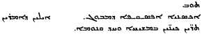

A.A.Vaschalde, Three Letters of Philoxenus (1902). pp.1-80. Part 1.
INTRODUCTION.
1. The material available for a biography of Philoxenus is not very abundant. Little is known, especially of his early life. Yet he was a prominent leader in the great movement which took place in Syria in the fifth and sixth centuries against the doctrines of Nestorius and Eutyches, and against the decrees of the Council of Chalcedon, a movement which resulted in the peculiar heresy known by the name of Monophysitism in specie (1) or Jacobite Monophysitism (2).
The few facts which we possess regarding Philoxenus' career are derived from sources which may be divided into two classes: Syriac and non-Syriac. The principal non-Syriac sources consist of short passages in the works of Theodore the Reader (3), |2 Victor Tununensis (4), Evagrius (5), Theophanes (6), and Cedrenus (7). These writers, however, do not always present independent testimony, for some of them often merely copied their predecessors (8).
The Syriac sources are also very fragmentary. The Vatican Syriac Ms. 155 (Codex Syr. noster XVI of Assemani) contains a biographical notice on Philoxenus by an unknown author. This is the document from which Assemani took the four extracts he gives in his sketch of Philoxenus' life (B. O., II, pp. 10, 13, 17, 20) (9). We publish it in extenso in Appendix I, and shall refer to it as the Anonymous Notice. It does not add much to what we already know. Scattered bits of information about Philoxenus are found here and there in Syriac authors, especially in the Letter of Simon of Beth-Arscham concerning Barsauma, bishop of Nisibis (10), in the Edessene Chronicle (11), in the so-called Chronicle of Joshua the Stylite (12), in the writings of Jacob of Edessa (13), and in the Ecclesiastical History of Bar-Hebraeus (14). The published writings of Philoxenus and the three letters which, for the first time, are given in this dissertation, supply us with a few important data, and it is probable that much valuable information might be gathered from his other works, but, unfortunately, they still remain unedited. |3
It is not within the scope of the present chapter to discuss all the different sources which have been enumerated; but it is sufficient to show that the information which we obtain from Syriac documents and from the writings of Philoxenus himself, sometimes confirms or supplements, and sometimes corrects or contradicts the testimony derived from non-Syriac sources.
2. We are entirely ignorant of the year of the birth of Philoxenus; but as he studied at Edessa in the time of Ibas (15), bishop of that city from 435 to 457 (16), and was still living in 522 (17), it is safe to assume that he was born in the second quarter of the fifth century.
Theodore the Reader, Evagrius, and after them, Theophanes and Cedrenus, inform us that Philoxenus was of Persian origin (18). Their testimony is confirmed by Simon of Beth-Arscham and by the writer of the anonymous notice. They give the additional information that Philoxenus was born at Tahal, a village in the province of Beth-Garmai (19). The anonymous notice says: «Philoxenus, bishop of Mabbôgh, wise in God and illustrious by his science, is the same as Mär Aksenäyä who is famous for his writings. He was born in the village of Tahal, in the country of the Persians»(20). Nothing is known of his |4 parents; he had a brother named Addai who studied with him at Edessa(21).
In a fragment of Theodore the Eeader (22), it is related that some bishops from Persia visited Philoxenus after he had been appointed to the see of Mabbôgh, and recognized in him a slave who had run away from his master and had never been baptized. This they told to Peter the Fuller who had consecrated him bishop; but Peter, caring little what ought to be done, replied that the episcopal consecration was sufficient to take the place of baptism. This accusation is also made by Theophanes (23) and Cedrenus (24), and, in modern times, is repeated by the judicious Tillemont (25) and the learned Le Quien (26).
We have no means of determining whether Philoxenus was born a slave or a free man; but there is abundant proof that he was baptized. The testimony of Theophanes and Cedrenus, and the opinion of Tillemont and Le Quien, need not be considered here, for they evidently rest on the authority of Theodore. Now Theodore gives his information on mere hearsay, and does not confirm it by any written or public document. He says: «Concerning him (Philoxenus), I shall relate in part many things which I learned from different men through diligent inquiry» (27). Evagrius does not say that Philoxenus was unbaptized, and his silence is very eloquent here, for he had received his information concerning Philoxenus from old men who had seen with their own eyes, and remembered well everything that happened in Antioch in the days of Flavian, with whom Philoxenus |5 was continually at war (28). Again, the monks of Palestine, in their famous letter to Alcison, bishop of Nicopolis in Illyria, accuse Philoxenus of various crimes, but they make no allusion to the question of his baptism (29).
But, besides this negative evidence, it can be shown from Philoxenus' own writings that he had received the sacrament of baptism. In his Letter to Zeno, he says: «I was baptized, therefore, in the name of Him Who died, and I confess that He in Whose name I was baptized, died for me, and I believe that I have put on in baptism Him in Whose name and in Whose death I was baptized, according to the words of Paul. For I have put on spiritually in the waters (of baptism) the Spiritual Being Who became corporal, and I confess that He Who, living, experienced death in the flesh, is He Who raises (the dead) and gives life»(30). And again, in the same letter, he writes: «In saying anathema to these doctrines (of Nestorius and Eutyches), I act according to the Holy Books, and adhere to the tradition of the Fathers from whom I have received the true and apostolic faith, that faith by which I have been found worthy, with all the baptized, of life, of freedom, and of adoption» (31). We have no reason then to doubt the fact of Philoxenus' baptism, Assemani is probably right when he says that the assertion of Theodore the Reader is a calumny invented by the orthodox, «ab orthodoxis in odium flagitiosissimi hominis adjectum fuisse»(32); and, as this last sentence shows, Assemani cannot be suspected of partiality towards Philoxenus. |6
3. At a comparatively early age Philoxenus, accompanied by his brother Addai (33), came to the Persian school of Edessa which was then, and had been from the time of its foundation in 363, the most prominent center of intellectual and literary activity among the Syrians (34). St. Ephrem taught ten years there (363-373) (35), and in its halls were trained some of the greatest masters of Syriac literature (36). As may be inferred from the many Syriac translations from the Greek which have come down to us, the writings of the Greek Fathers (37) and the teachings of Aristotle (38) were held in high esteem by that famous school, and the influence of both on Philoxenus is plainly noticeable (39). |7 It is there that he became acquainted with the patristic lore of the age, and especially with the works of Cyril of Alexandria for whom he always professed the greatest admiration. His knowledge of the Fathers must have been considerable, for in his treatise «How One Person of the Holy Trinity became incarnate and suffered for us», he quotes passages not only from SS. Ephrem and Cyril, but also from St. John Chrysostom, Eusebius of Emesa, Alexander and Theophilus of Alexandria, St. Athanasius, St. Basil, St. Gregory of Nazianzen and Atticus of Constantinople (40). It is partly from the works of those great masters that Philoxenus derived the wealth of theological terms and expressions for which his writings are remarkable. These terms and expressions do not imply a servile imitation of Greek literature, for his style and vocabulary are distinctly Syriac (41); they rather account for his deep knowledge of the principal religious works of the times, and his wonderful power and skill as a controversialist.
Philoxenus was influenced also by the philosophy of Aristotle. As the examination of his doctrines will show, his theological opinions reflect the tendencies of the school of Antioch, in which the teachings of the Stagyrite held sway, no less than those of the school of Alexandria which recognized Plato as its master. This is particularly true of his views on the Incarnation. Like the Alexandrian Monophysites, he admits only one nature in Christ after the union and dwells on the mysterious union of the two natures and on the necessity of faith in all |8 questions relating to the Incarnation of the Son of God; but, with the followers of the school of Antioch, he insists on the reality of Christ's humanity and its consubstantiality with ours, rejects the Gnostic and Eutychian theories on the origin of the body of the Lord, and teaches explicitly that Christ suffered in the flesh, that is, only in so far as He became man. Indeed, he hurled anathemas against Eutyches as freely as he did against the Nestorians and against the Catholics who received the decrees of the Council of Chalcedon.
But the school of Edessa was more than a home of science and literature; it had become the center of the religious polemics of the times. Naturally enough, it could not remain indifferent to the great christological questions which occupied the minds of both the clergy and the people, and which were discussed with as much ardor in the imperial palace at Constantinople as in churches and monasteries. Nestorian opinions were being spread broadcast and found their way into this famous school. St. Rabbula, who was bishop of Edessa from 412 to 435 (42), after having, according to some, looked with favor upon the new doctrines (43), fought with energy against them as soon as he understood that they were subversive of Catholic faith. He was one of the strongest supporters of Cyril of Alexandria at the Council of Ephesus (431) (44), and he translated into Syriac (45) Cyril's De recta fide in Dominum Nostrum J. C., which he distributed on all sides in the hope of checking the progress of error. But the seeds of the new heresy had taken deep root. Rabbula's successor, Ibas (435-457), was openly favorable to Nestorius. In collaboration with Koumi, Probus, and Mane, all disciples of the Persian school, he had, in his youth, translated |9 the works of Theodore of Mopsuestia and of Diodorus of Tarsus (46); and when Philoxenus came to Edessa, the great school had become a hotbed of Nestorianism and remained such up to the time of its destruction by order of Emperor Zeno in 489 (47).
However, not all the students shared the opinions of Ibas. Among those who disagreed with Mm, Simon of Beth-Arscham mentions Philoxenus of Mabbôg, and his testimony is well borne out by Philoxenus' subsequent career, for, during more than sixty years, he waged an incessant war against the doctrines of Nestorius. Under the name of Nestorians he also included Catholics and all those who maintained two natures in Christ; for, confounding the notions of nature and person, he did not admit a middle course between the Nestorian heresy and the Catholic doctrine. This explains why, in the same breath, he anathematizes not only Nestorius and Ibas, but also Pope Leo I, Leo's dogmatic epistle to Flavian of Constantinople, and the definition of the Council of Chalcedon (48), He refers to Catholics as the Nestorian heretics (49), for not admitting two persons as well as two natures in Christ.
4. But Philoxenus, as he tells us in his Letter to the Monks (50), did not keep his faith to himself. It is probable that, |10 after his departure from the Persian school, he travelled through Northern Mesopotamia and the Osrhoene province, spreading his Monophysite doctrines and enlisting the sympathy and help of those who agreed with him. The fact that he wrote letters to the Monks of Amid (51), of Arzun (52), and of Senun (53), would confirm this view, and such is also the inference which may be drawn from his first Letter to the Monks of Bêth-Gaugal, one of the many monasteries in the neighborhood of Amid (54). This important letter, as will be shown later on, was written in the year 485. It proves beyond all doubt that Philoxenus was well known by the monks there. The tone of the letter, the nature of its contents, the praises which he bestows upon their labors on behalf of truth, and the bitterness with which he speaks of his enemies, show not only that the Monks of Bêth-Gaugal agreed with him on matters of doctrine, but that he had in them willing and powerful allies ready to help his cause and to further his plans. However the labors of Philoxenus were not confined to the territory around Edessa and Amid. He must have come west of the Euphrates into Syria Prima before the year 485; for, according to Theodore the Reader, Evagrius, Theophanes, and Cedrenus, he was expelled from Antioch by the patriarch Calandion |11 (482-485), for corrupting the doctrines of the Church and disturbing the villages near the great city (55).
We have here a manifest allusion to his proselytizing work on behalf of Monophysitism and to the crusade he had already undertaken against the Nestorians and against the adherents of the Council of Chalcedon. The times were indeed favorable to his schemes. Zeno and Acacius, patriarch of Constantinople, were at war with the Holy See. The famous Henoticon of 482, which was to restore unity to the divided churches, had become a decree of discord (56). It offended the Catholics, because it spoke in equivocal terms of the faith of the Fathers of Chalcedon; and it did not satisfy the extreme Eutychians, because it did not condemn explicitly the doctrine of the two natures. The proud Acacius acted as if the pretensions of the 28th canon of Chalcedon, which made Constantinople the second see of the catholic world (57), had been recognized by Rome. He persuaded Zeno to depose John Talaia from the see of Alexandria and to appoint Peter Mongus in his stead (58). Contrary to the discipline of the Church, he appointed the heretic bishop, John Codonatus, to the diocese of Tyre, thereby usurping the rights of the patriarch of Antioch (59). Moreover, he endeavored to induce all the bishops of the East to sign the Henoticon and to communicate with Mongus (60). Deaf to the remonstrances of the Holy See, he was excommunicated by Felix III (61), and his excommunication marked the beginning of the Eastern schism (484-519) during which Constantinople was cut off from the communion of Rome. |12
Such a deplorable condition of affairs helped Philoxenus' designs. Besides, he had grievances of his own against Calandion. This holy patriarch was a zealous defender of the decrees of the Council of Chalcedon; he persistently refused to sign the Henoticon of Zeno (62); he would not separate himself from the communion of Rome nor acknowledge the usurper Mongus as the lawful patriarch of Alexandria (63); he had inserted the words «Christ King» into the Trisagion of Peter the Fuller, so as to refer the crucifixion explicitly to Christ alone (64); in a word, Calandion was then one of the standard bearers of the Catholic faith in Syria, and a staunch opponent of Monophysitism. Philoxenus, who had already espoused the cause of the Monophysites, became his bitter enemy. Nor was he alone in the struggle. It is indeed very probable that he was assisted by the monks of Teleda (65), and of Mar Bassus (66), two famous monasteries in the neighborhood of Antioch. We know from his letters to the Monks of Teleda and of Senün, that he had been in the monasteries of Mar Bassus and of Teleda, where the monks shared his opinions. It is possible that he was making an active propaganda among them. At any rate, Calandion, discerning in him an enemy of the faith and a disturber of the peace of the Church, expelled him from his diocese (67). But this triumph was not of long duration; for, under pretext of having favored Leontius in his revolt against Zeno, but in reality for refusing to sign the Henoticon (68) and to communicate with Mongus (69), Calandion |13 was banished to Egypt and the see of Antioch passed for the third time into the hands of Peter the Fuller (70).
After this, it would be natural to suppose that Philoxenus was connected in some way with the deposition of Calandion. His first Letter to the Monks of Beth-Gaugal seems to warrant this supposition. He says: «And the same friend of Christ (the Emperor) has openly declared that he gained the victory over his enemies with (the help of) your prayers, and he is ready to give us ample reward for the work which we have undertaken for the peace of the churches, and to drive away from them the enemies of the Cross» (71).
5. The nature of the reward to which Philoxenus alludes here can only be a matter of conjecture. It is worthy of notice, however, that in the year 485, shortly after the exile of Calandion and the intrusion of Peter the Fuller into the see of Antioch, Philoxenus was, by the latter, consecrated bishop and appointed to the diocese of Hierapolis or Mabbôgh (72) in the |14 patriarchate of Antioch. It was on this occasion that his name was changed from Aksenäyä to Philoxenus (73).
The anonymous notice (74) places Philoxenus' consecration in the year 800 of the Greeks (A. D. 488), but this is certainly an error. Church historians (75) agree in saying that Philoxenus came to Mabbôgh in 485, and their testimony is confirmed by a passage in Philoxenus' Letter to the Monks of Senün written in the year 522 from Philippopolis in Thrace, where he had been exiled by Justin. Speaking of Alexander, his successor in the see of Mabbôgh, he says: «The clergy and the monks of our city have been ordered by him who rules over them to accept his (Alexander's) faith. As to our faith, which is that of Peter and of the Apostles, and which during thirty-four years I have preached to them in all ecclesiastical assemblies, they are commanded by him to look upon it as the heresy of the Manicheans» (76). From the Edessene Chronicle (77) we know that Philoxenus was exiled in the second year of Justin (519). If we subtract thirty-four from this latter date, we get 485 as the year of his appointment to Mabbôgh. It was probably in the same year that he accepted the Henoticon which, under the reigns of Zeno and Anastasius, had to be signed by all the bishops of the East under penalty of exile (78), and which was then, as Tillemont remarks, the only door to the episcopate (79).
Very little is known concerning the next thirteen years of Philoxenus' life. There is no doubt that he continued his opposition to the doctrines of Nestorius and Eutyches and propagated his religious views in his vast province. It is also |15 possible, as Budge observes, that during this time «he wrote parts or all of many of the works which have made his name so famous among Monophysite writers» (80). The Letter to Zeno was written probably in 485 when he signed the Henoticon. The Discourses on Christian life and character were composed, according to Budge (81), between 485 and 500. We may also place within the same period the beginning of his translation of the Bible which was published at Mabbôgh in 508 (82). His discourses show that in the midst of turmoil and strife he found time for meditation and study; they contain no allusion whatever to the disputes and controversies in which he was engaged for the greater part of his life.
According to the so-called Chronicle of Joshua the Stylite (83), Philoxenus was in Edessa in May 498. The Saturnalia were being celebrated there for the second time. During seven days the citizens gave themselves up to all kinds of games and pleasures with the consequence that prayer and divine service were neglected. The pious author of the Chronicle remarks that Philoxenus preached only one day against the scandal, though he especially should have taken upon himself the duty of instructing the people.
6. In the year 498 Palladius, the Monophysite patriarch of Antioch, died and was succeeded by Flavian II. The latter passed for being an opponent of the Council of Chalcedon (84), and this is probably the reason why he was appointed by |16 Anastasius to that important see. After his accession, however, he declared himself in favor of the Council, renounced the communion of the patriarch of Alexandria (85), and united himself with Macedonius of Constantinople and with Elias of Jerusalem. This change of policy drew upon him the opposition of Philoxenus, and thus began between the two a struggle which, with some interruptions, lasted for nearly fourteen years (499-513).
It was probably in the interest of his party and to protest to Anastasius against Flavian's appointment that Philoxenus went twice to Constantinople, as we learn from his Letter to the Monks of Senûn, in which he complains of the persecutions he suffered at the hands of his enemies: «What I have suffered from Flavian and Macedonius, who were archbishops of Antioch and of the capital, and before them from Calandion, is known and spoken of everywhere. I keep silence concerning what was plotted against me in the time of the Persian war among the nobles by the care of him who is called Flavian the heretic, and what happened to me in Edessa, and in the country of the Apameans, and in that of the Antiochians when I was in the monastery of the blessed Mar Bassus, and also in Antioch; and again, when I went up to the capital on two occasions, the like things were done unto me by the Nestorian heretics (86)».
The first of these visits to the capital is believed to have taken place in 499 (87). Victor Tununensis relates that a council was held at Constantinople in that year under the presidency of Flavian and Philoxenus. At the demand of Anastasius, the council anathematized Diodorus of Tarsus, Theodore of Mopsuestia, Theodoret of Cyrus, Ibas of Edessa, Andrew of Samosata, Eleutherius of Tyana, Cyrus of Hierapolis, John of Cyrrhus, and all those who admitted two natures in Christ and did not |17 confess that one of the Trinity was crucified, also Leo of Rome and his dogmatic epistle, and the Council of Chalcedon (88). It is probable that Victor anticipates here the course of events, and places in the year 499 what, according to Theophanes and Evagrius, took place later on. It is hardly reasonable to suppose that a council could be held from which Macedonius, the patriarch of Constantinople (496-511), would have been excluded; still less, that Flavian would have consented to preside over a council in company with his enemy. Doubtless Victor refers here to another council (89) which was held at Constantinople in 498, to bring about a reconciliation between some monasteries of the city and the principal church from which they had separated themselves on account of Acacius and of the Henoticon. Whatever may have happened during Philoxenus' first visit to the capital, it is certain that his differences with Flavian were not settled. The Persian war (502-505), which caused untold misery and destruction in Syria and Mesopotamia, and in Philoxenus' own province, interrupted for a while the struggle between them. But it was renewed in 507 (90) with more bitterness than ever. From the passage quoted above it would appear that Flavian had sought to influence the nobles, probably the Roman officials of the country, against Philoxenus. Certain it is that the latter began to accuse Flavian of Nestorianism. After Flavian had anathematized Nestorius and his doctrine, Philoxenus insisted that he should also anathematize Diodorus of Tarsus, Theodore of Mopsuestia, Theodoret of Cyrus, Ibas of Edessa, Cyrus of Hierapolis, Eleutherius of Tyana, and John of Cyrrhus, and told him that he would continue to regard him as a Nestorian, unless he condemned all these men together with their |18 doctrines (91). To bring greater pressure to bear upon him, Philoxenus enlisted the help of the Acephali of Egypt, and of Eleusins of Sasima and Nicias of Laodicea, all of whom shared his opposition to Flavian (92). Coming again to Constantinople, Philoxenus sought the help of the Emperor with the result that in 509 Anastasius tried to force Flavian to sign the Henoticon a second time (93) and to condemn all the bishops whom Philoxenus had mentioned. Flavian convoked a provincial synod, and sent to the Emperor a letter in which, for the sake of peace, he confirmed the first three Councils and anathematized the persons named by Philoxenus, but did not speak of the Council of Chalcedon. With this procedure, however, Philoxenus was not satisfied, and he demanded that Flavian and Elias of Jerusalem, Flavian's friend, should condemn the Council of Chalcedon and all those who admitted two natures in Christ (94). He then joined hands with Soterichus of Cappadocia and appealed again to Anastasius, who gave orders for a council to meet at Sidon, 511-512 (95). Flavian and Elias were both present, and Philoxenus and Soterichus presided. We do not know exactly what took place there (96). Through the efforts of Flavian and Elias the Council of Chalcedon was not anathematized, and the council of Sidon was dismissed without anything being done against them. Thereupon, Philoxenus wrote to the Emperor accusing the two bishops of having acted hypocritically (97). Seeing that his efforts to dispossess Flavian of the see of Antioch had failed, he bribed the monks of Cynegica and those of Syria Prima to rush into the city and to make Flavian anathematize the Council of Chalcedon (98). |19 But the inhabitants, who were devoted to Flavian, rose up in arms against the monks, slew many of them, and cast their bodies into the Orontes. In a moment of weakness, and perhaps to avoid further bloodshed, Flavian pronounced anathema against the Council of Chalcedon, and the four bishops, Diodorus, Theodore, Ibas, and Theodoret (99). But Philoxenus accused him again of insincerity, and Flavian was banished to Petra in Palestine (Palaestina IIIa) (100), and the Monophysite monk Severus was appointed patriarch in his stead (101).
7. Philoxenus did not long enjoy the fruits of victory. The Emperor Anastasius, his protector and friend, died in 518 and was succeeded by the orthodox Justin I. One of the first acts of the new ruler was to unite his efforts with those of Pope Hormisdas in bringing about a reconciliation between the East and the West. Communion with Rome was solemnly reestablished on Easter Sunday, March 24, 519 (102), and thus ended the schism which for thirty-five years had been a menace to the Church and to the Empire. The orthodox bishops who had been deposed under Zeno and Anastasius were restored to their sees, and the recalcitrant Monophysites sent into exile. Among the latter Theophanes mentions Philoxenus and his neighbor Peter ot Apamea (103).
Philoxenus was first banished to Philippopolis in Thrace. It is from there that he wrote his Letter to the Monks of Senün, and probably also his Letter to the Monks of Teleda, |20 two of the most important of his dogmatic works. In both of them he condemns the errors of Nestorius and Eutyches, and shows clearly that the sufferings and privations of his exile did not change the opinions for which he had been fighting since he left Edessa over half a century before. From Philippopolis he was brought to Gangra(104) in Paphlagonia, where he was murdered, probably in 523.
The anonymous notice (105) gives the following account of his death: «And when he (Philoxenus) had filled the Church with divine teachings and had interpreted the Books, and refuted the faith of the Nestorians by his writings against them, they cast him into exile in the city of Gangra and suffocated him with smoke. They shut him up in an upper chamber, and made smoke in the room below, and locked the doors. And thus he received the crown of martyrdom, being suffocated by them in the true confession».
8. Such was the death of Philoxeuus. Very different judgments have been passed on this remarkable man. The Jacobites honor him as a martyr and saint. They celebrate his memory on the tenth of December, the eighteenth of February and the first of April (106), and, in the profession of faith exacted in the Jacobite Church from candidates to ordination, he is ranked among the holy Doctors and Fathers who preserved the faith of the first three Councils (107). The historians of the Byzantine period |21 regard him as the vilest of men, a slave of Satan (108), and a stranger to God (109). They accuse him of never having been baptized, and see in him a Manichean and the author of the heresy of the Iconoclasts. There is evidently a great deal of exaggeration on both sides and, as Budge remarks, «it is probable that we must make some allowance for the hostility of those to whose lot it has fallen to describe his life» (110).
It is certain that Philoxenus was baptized, if the evidence derived from his works is worth anything. His doctrine on the Incarnation does not bear out the charge of Manicheism; moreover, in some of his writings (111), he explicitly rejects the teachings of Mani and of Marcion. That he was an Iconoclast is not proved, and the passage adduced by Assemani (112) to confirm the testimony of Theophanes is far from conclusive. It is beyond question, however, that Philoxenus was always a bitter enemy not only of the doctrines of Nestorius and Eutyches, but also of the definition of the Council of Chalcedon which he regarded as confirming the heresy of Nestorius. It is also certain that he resorted to violent means to deprive Flavian of the episcopal throne of Antioch. Yet he seems to have been sincere in his opposition. From the Letter of the Monks of Palestine to Alcison, bishop of Nicopolis, it would appear that, according to some, Philoxenus was moved to attack Flavian by what seemed to him the interests of the faith (113). In his Letter to the Monks of Beth-Gaugal, Philoxenus thus rebukes his adversaries: «I fight for the common faith, and thou settest thyself against me with |22 the heretics. I toil and work day and night that the truth which was delivered to the Church may not be changed, and I direct the weapons of argument against those who deny the Cross, and thou insultest me (saying), «Hold thy tongue, let them do what they wish». They want me to be silent lest I should expose their doctrines, and thou, with them, wantest me to remain silent. I hasten to root out division and to end the schism which they have caused in the faith, and thou de-clarest publicly that I am the cause of the division. They began a tumult, introduced a novelty, and disturbed the peace of all the churches, and thou considerest me as the author of the disturbance» (114). In his Letter to the Monks of Teleda. written during his exile, he says that he expects eternal life on account of the persecution to which he is being subjected: «If death should come to me on account of this truth, I believe that I shall receive life from it. And not only (the words) seducer and corruptor and other opprobrious names am I ready to hear for this doctrine, but I am also ready to suffer fire and beasts, and different kinds of torments, and persecutions without number» (115). And notwithstanding all this, he asks the prayers of the monks that his own enemies may be converted and see the truth: «Let us pray for them that they may repent, and may be found by the truth which seeks to find them; that their eyes may be opened so that they will see what they are doing and whom they persecute» (116).
But if historians and scholars differ in their judgment of the character of Philoxenus, they all agree in regarding him as one of the brightest stars of Syriac literature. Jacob of Edessa (117), whom the Syrians call The Interpreter, ranks him among the |23 four great Syriac Doctors, putting him on an equal footing with St. Ephrem, Jacob of Serugh, and Isaac of Antioch. Bar-Hebraeus calls him «a most eloquent man and wonderful doctor who attacked mightily the party of the Dyophysites, and set forth healthy doctrines concerning the holy way of monastic life» (118). The moderns are no less lavish in their praise and admiration. Assemani, who pronounces a very severe judgment on Philoxenus' character, calling him «a most corrupt man» (119), «a most pernicious heretic» (120), who would have devastated the Church of God like a wild boar (121), confesses that he wrote Syriac most elegantly: «Scripsit Syriace, si quis alius, elegantissime» (122). The late Prof. Wright of Cambridge, who won for himself universal fame as a Syriac scholar, says that Philoxenus was not only a man of strife and action, but an elegant writer as well (123). Prof. Guidi, of Rome, in his beautiful edition of the Letter of Philoxenus to the Monks of Teleda, also contributes his share of praise to the purity, eloquence and force of the style of Philoxenus: «Il suo valore letterario è incontrastato; ed in lui la squisita purità délia lingua non è inferiore all'eloquenza ed alla forza dello stile» (124). And it is gratifying to add that the three letters, which are published in this volume, fully confirm the universal judgment of scholars as to the literary merits of Philoxenus, and give us, besides, a new proof of the dialectical skill and theological learning of that famous Monophysite. |24
Philoxenus was one of the most prolific writers of his age. When we think of the troubled condition of his life, and of the constant struggle that he waged against the doctrines of Nestorius and Eutyches, and against the definition of the Council of Chalcedon, it is indeed marvelous that he should have found time to write so large a number of works. They are preserved mostly in the libraries of the British Museum, of Oxford, Rome, and Paris (125). They deal with a great variety of topics, and may be classified under four principal heads: Scripture, liturgy, asceticism and dogma. Outside of a hymn on the Nativity of Our Lord (the authenticity of which is doubtful for it has also been attributed to Severus of Antioch and to John bar Aphthon) (126), they are all written in prose, and, as ancients and moderns agree, they are among the best specimens of the golden age of Syriac literature. Unfortunately, the majority of them are still unpublished. Until the year 1873, in which Martin edited in his |25 Syro-Chaldaicae Institutions (127) the text of the Letter to Abu-Nafir, nothing was known of the writings of Philoxenus, except a Latin translation of two of his Anaphoras by Renaudot (128), and the brief extracts given of several of his works in the Bibliotheca Orientalis of Assemani (129). We give here a review of all the published works of Philoxenus, as we had to make use of some of them in the exposition of his doctrines.
9. The Discourses of Philoxenus on Christian life and character, the most important of his ascetical works, were published (Syriac text and English translation) in 1894 by Budge from Syriac Mss. of the sixth and seventh centuries in the British Museum (130).
The text is based on Add. 14598 (Wright DCCLXIV), which is called A. Variant readings are given from Add. 14595 (Wright DCLXXVIII), Add. 12163 (Wright DCLXXV1I), Add. 17153 (Wright DCLXXIX), Add. 14596 (Wright DCLXXX), Add. 14625 (Wright DCLXXXI), Add. 14601 (Wright DCCXCV), and Add. 14621 (Wright DCCLXXIX). These seven Mss. are referred to as B, C, D, E, F, G, and H respectively. From the fact that the Scriptural quotations in the discourses are taken from the Peshitta, Budge concludes that these discourses were |26 written before 508, the year in which Philoxenus published his translation of the Bible at Mabbôgh, and he places the time of their composition between 485 and the end of the fifth century (131).
These discourses are thirteen in number. The first is a prologue to the others; the second, third, and fourth treat of faith as a virtue; the fifth treats of simplicity; the sixth and seventh, of the fear of God; the eighth and ninth, of poverty; the tenth, of gluttony; the eleventh, of abstinence; and the twelfth and thirteenth, of fornication. They are written in exquisitely pure Syriac, and in them especially we notice those qualities of style for which Jacob of Edessa admired and praised the writings of Philoxenus (132).
Besides the above discourses, Budge has also published, in the second volume of his work, seven other short treatises of Philoxenus, which are very important from a dogmatic standpoint. Though less interesting than his larger dogmatic writings, they contain, in a few pages, the principles underlying his theological opinions, and make us partly acquainted with the objections which he urged against the Nestorians and against the adherents of the Council of Chalcedon. We give here a review of these different texts.
a) An explanation (133) of the heresies of Mani, MarcionJ and others, from. Add. 14529 (7th or 8th century) (Wright DCCCLVI) of the British Museum, (fol. 65b-66b). The title is:
In this document, Philoxenus explains and rejects the heresies of the Gnostics, the Nestorians, and the Eutychians on the Incarnation, and gives us a short statement of his own doctrine. |27
b) A treatise against every Nestorian (134), from the same Ms. (fol. 66b-(38a). The title is:
It contains seven chapters or paragraphs of which a summary is given (p. xxxvii). Philoxenus anathematizes Nestorius, Diodorus of Tarsus, and Theodoret of Cyrrhus, accepts the twelve chapters of Cyril of Alexandria against Nestorius, receives the Henoticon of Zeno, and pronounces anathema upon every one who would divide Christ into two natures.
c) A confession of faith (135) against the Council of Chalcedon. From the same Ms. (fol. 68a-69a).
In ten short paragraphs Philoxenus anathematizes the Council of Chalcedon for composing, as he says, a faith at variance with that of the Council of Nice, for excommunicating Nestorius while agreeing with him in doctrine, for distinguishing two natures in Christ and receiving Ibas of Edessa, Theodoret of Cyrrhus, and Leo (the Great) of Rome.
d) How one must reply when questioned as to his belief (136). From the same Ms. (fol. 69b-71a). [Syriac]

In this document, Philoxenus gives us a concise statement of his belief in the Blessed Trinity and in the Incarnation.
e) Twelve chapters against those who maintain two natures in Christ and one person (137). This treatise is found in |28 Add. 14597 (A. D. 569) (Wright DCCXXX) of the British Museum, (fol. 91a-98b). The title is:

Here Philoxenus argues that if we admit two natures in Christ, we must also admit two persons, and he does not distinguish between the Nestorian heresy and the Catholic doctrine.
f) Twenty chapters against, Nestorius (138). From the same Ms. (fol. 98b-105b). [Syriac]
In this treatise Philoxenus formulates twenty objections against the doctrines of Nestorius. Most of these objections rest on the confusion of the notions of nature and person, his chief point being this, that since the Word became incarnate in His person, He also became incarnate in His nature, and since there is only one nature before the Incarnation, there can be but one after the Incarnation. Thus in the third chapter he says: «If God the Word became man in His person, and is not called two persons, but one person who became man, He also became man in His nature, and His nature who became man is one, and is not called two natures».
g) Ten chapters against those who divide Our Lord after the indivisible union (139). From the same Ms. (fol. 105b-107b). :
These ten chapters are directed against the Nestorians for admitting two persons in Christ, and against the followers of the Council of Chalcedon for acknowledging two natures after the union. Both, according to Philoxenus, divide Our Lord |29 by admitting two persons or two natures in Him. Here again he misunderstands the Catholic doctrine. Thus, in the third chapter, speaking of the adoration of the Magi, he says: «If two natures be admitted in Christ, which of the two did the Magi worship? If the divine nature, they could have done so when they were in their own country; if the human nature, they are worthy of blame, not of praise. Now the Book testifies concerning them that their action is worthy of praise. Therefore, when they worshipped Christ, they worshipped the Incarnate God» (140). In the premises of this argument, he evidently supposes that Catholics adore the natures separately.
10. The Syriac text of this letter was published in 1873 by Martin (141) from Add. 14529 of the British Museum (fol. 61a-65b). Fragments of it are also found in Add. 17193 (Wright DCCCLXI) (fol. 83a) (142), and Add. 17134 (Wright CCCCXX1) (fol. 4b) (143). The title is:
The synodical letter which Mär Aksenäyä, bishop of Mabbôgh, wrote to Abu-Nafir, stratelates (144) of Hira (145) of Beth-Naaman. |30
Date. The list (146) of the rulers of Hira does not contain the name of Abu-Nafir. It mentions, however, Abu-Yafar who ruled from 498 to 503, simply as a vassal or lieutenant of the Persian King. If we assume his identity with Abu-Nafir, the date of composition of this letter would fall between 498 and 503. This document is very unlike the published writings of Philoxenus. The obvious differences of style and the glaring anachronisms which it contains regarding prominent events in the lives of Nestorius and of Theodore of Mopsuestia, raise serious doubts as to its authenticity (147). Philoxenus should have been well acquainted with the history of Nestorius and of Theodore, for he spent a few years in Edessa and in Antioch, cities which were for a time the strongholds of Nestorianism in the East. As no translation of this letter has been published, a detailed analysis of its contents will not be out of place here.
The letter gives: a) the genealogy of Nestorius and of Theodore; b) their elevation to the sees of Constantinople and of Mopsuestia; c) their heresy; d) the condemnation of Nestorius by the Council of Ephesus; e) the heresy of Eutyches and his condemnation at Chalcedon; f) the return of Timothy Aelurus to Alexandria; g) and the origin of the sect called Esaianists.
a) Addi married a woman named Amlaka who bore him two sons: Barbeelšemin and Abasoum. Barbeelšemin was the father of Nestorius, Abašoum of Theodore (148). Nestorius and |31 Theodore were born (149) at Maraš where the sons of Addi had settled. After they had mastered the Greek language, they were sent to Athens (150), where they studied philosophy.
b) In Athens, they became acquainted with some free men from Constantinople who praised them before Honorius, with the result that Honorius (151) commanded that they should both be made bishops, Nestorius, of Constantinople, and Theodore, of Mopsuestia.
c) Once in possession of their sees, they began to corrupt the true faith in private commentaries which they sent to each other (152), distinguishing the Only Son of God into two natures, attributing miracles to the one, and humiliations to the other.
d) Hearing of this, Theodosius the Younger convoked the Council of Ephesus against the Nestorian doctrines. Then Nestorius wrote to Theodore, and told him not to be afraid, but to go the Council (153), and to anathematize him (Nestorius), not indeed with the anathema which cuts one off from the kingdom of heaven, but only in the sense in which St. Paul desired to be anathema for the salvation of his brethren, the sons of Israel. |32
e) In the days of Marcian, Eutyches rose against the Church, and taught that the Son of God brought His body down from heaven (154). And, because he would not recede from the position he had taken, he was excommunicated by the Council of Chalcedon. After the Fathers had assembled, Leo (155) wrote to them to receive the doctrines of Nestorius (156), and his own tomos (157). On threat of deposition made by Marcian, they yielded, because they loved their office. But Dioscorus, patriarch of Alexandria, did not yield; he was exiled, and his secretary (158) became patriarch in his stead. The Alexandrians received the new patriarch; but some priests, deacons, and laymen who would not agree with the Council of Chalcedon, did not communicate with him; they fled into Ethiopia with Timothy (159), a disciple of Dioscorus.
f) After a while, the Alexandrians became sorry for having received the secretary of Dioscorus; they stoned him (160), and cast his body into the sea. After the death of Marcian, Timothy returned to Alexandria, took possession of the see, and forgave the Alexandrians. However, the priests, deacons, and laymen, who had returned with him, would not communicate with the Alexandrians, for they said: «Whoever has taken part in the Council of Chalcedon in any way, has not the priesthood ».
g) Then four priests from among them took the Gospel, placed it on the head of Esaias, and made him bishop. From |33 that time on they were called Esaianistae-Acephali (161). Concerning the belief of the Acephali, that those who had taken part in the Council of Chalcedon in any way had not the true priesthood, the letter goes on to explain that heretics confer baptism and priesthood validly, provided they have not preached their heresy openly. Consequently, the baptism and the orders conferred by the Fathers of Chalcedon after their dispersion were valid, because they did not preach their heresy (the definition of the two natures in Christ), so that the case of those who received those sacraments from them was parallel to the case of those who were baptized or ordained by Judas Iscariot. As his heresy was only in his heart, the sacraments which he conferred were valid.
11. This letter, addressed to Abraham and Orestes priests of Edessa, was published (Syriac text and English translation) by Frothingham in 1886, in his work Stephen Bar Sudaili, the Syrian Mystic, and the book of Hierotheos, Leyden (Brill). It is extant only in Syr. Ms. 107 of the Vatican (fol. 60r-63v), which is of the eighth century. The close of the letter is wanting. The title is: [Syriac] |34
Date. This letter was evidently written before the year 513, for Philoxenus refers to the impossibility of communicating, on account of differences in the faith, with the bishop of Jerusalem, Elias (494-513). Frothingham places the date of its composition between 509 and 512, when the contest between the Orthodox and Monophysite parties was at its height (162).
Bar Sudaili was a Monophysite monk of Edessa, who had become imbued with pantheistic doctrines, probably in Egypt. From Jerusalem where he had retired, he had sent followers of his to Abraham and Orestes, priests of Edessa, with books containing his impious teachings. Hearing of this, Philoxenus wrote to these priests, warning them against Bar Sudaili's errors. According to Philoxenus, he taught that everything was consubstantial with God, that the good and the wicked would receive the same measure of retribution in the next world, that, on the day of the consummation, all things would return into the divinity from which they came. In his letter Philoxenus refutes at some length Bar Sudaili's pantheism and his doctrine on salvation.
12. The Syriac text of this letter, together with an introduction and an analysis of the contents, was published in 1886 by Guidi (163). His splendid edition corresponds page for page, column for column, and line for line, with the original which is extant only in Syr. Ms. 136 of the Vatican (fol. 3a-29a). Folios 1, 2, and 6, are wanting, hence the letter shows no title. A Syriac Ms. of the |35 British Museum, Add. 14663 (Wright DCCLI), contains four short extracts (164) of this letter with the following title:
The Ms. having been injured, the reading of the letter was a most difficult and laborious task. Guidi confesses that the decipherment of it cost him much patience and fatigue, and he certainly deserves the gratitude of all Syriac scholars for placing within their reach this letter of Philoxenus, which is one of the best specimens of the controversial literature of that period.
Date. From the last sentence of fol. 3 a, col. 2, Assemani (165) concludes that Philoxenus wrote this letter during his exile (519-523): «Pray also for me, not that I may be delivered from this persecution, but that I may derive profit from it, that it may become unto me a cause of eternal life». In fol. 14b, col. 1, Philoxenus attacks especially one enemy, who. as Guidi remarks (166), may be Paul II, the successor of Severus on the episcopal throne of Antioch. On account of his zeal for the decrees of Chalcedon (he had placed the names of the six hundred and thirty Fathers of the Council in the diptychs) (167), Paul was accused of Nestorianism, and was called «the Jew» by the Monophy sites (168). It is probably to him that Philoxenus refers in the following passage: «If any one calls thee by the name of Jew or heathen, thou art angry, and thou art not angry with thyself for voluntarily placing thy portion with them, and contending with us in their own words (169)» . |36
If the identity of Paul of Antioch with the adversary attacked by Philoxenus be granted, the letter would certainly be posterior to 519, the year in which Severus was exiled by Justin. And it may have been written before the year 521, in which Paul resigned the see of Antioch (170).
This letter was addressed to the Monks of Teleda, according to Guidi (171), the modern Telladi, about half way between Antioch and Aleppo. That these monks shared the opinions of Philoxenus, is evident from Philoxenus' own words: «Therefore, what that faith is for which it is necessary for us to die, in a few words we will show; not as teaching, but because we agree with your truth and your faith, and to show that we are one with you on the question of the divine Economy. And if we have been a seducer and corruptor, as the adversaries say, then so are you also with us. But if we have been sincere and orthodox, and this is the truth, it is a common victory and joy for the holy body of the Church» (172).
The letter to the Monks of Teleda is one of the most important of Philoxenus' works from the standpoint of doctrine and style. It is dogmatic in character and argumentative in form. As we shall have occasion to quote from it frequently when treating of Philoxenus' doctrine on the Incarnation and the Trinity, a brief analysis will suffice here.
After recommending himself to the prayers of the monks that he may derive profit from his sufferings, Philoxenus declares his belief in the Trinity and in the Incarnation of the Son of God. He shows afterwards that the same Christ is both «ante omnes» and «the Firstborn from the dead»; ante omnes, because He is God, and the Firstborn from the dead, because He became man. Concerning the death of Christ on the |37 Cross, Philoxenus defends against the Nestorians the proposition «The Immortal died», and shows how he understands it. First of all, he postulates faith as a necessary condition to believe that Christ died, because faith is not needed to believe that God is immortal, and that man is mortal. Then he takes up in order his adversaries' objections. These were contained in a letter or treatise ('eggartha), which seems to have had considerable influence on the religious polemics of the times (173). The following are the principal objections with which he deals:
a) How can God be at the same time mortal and immortal?
b) Since angels do not die, how can God, Who made them immortal, die?
c) If Life died, who gave it life again?
d) Who ruled the universe, the three days that God was in the grave?
In answer to those different objections, Philoxenus shows that the Word of God suffered only in so far as He became man; that He was not a sufferer by nature, but by His will; that, when He was lying dead in the grave, He was living the life of His divinity, for the life which He commended on the Cross into the hands of His Father, was not His divine life, but the life which He had taken from us.
Towards the end of the letter, Philoxenus rejects the words «Christ King», which Calandion had inserted into the Trisagion of Peter the Fuller. He condemns the addition as bringing in Christ after the three divine persons, or as introducing a fourth person into the Trinity.
Philoxenus closes his letter with an anathema against Nestorius and Theodore of Mopsuestia, and with the declaration that he is ready to die for his faith. |38
13. The dogma of the Incarnation was the principal theme of religious controversy in the fifth century of the Church. The disputes with the Gnostics, the Arians, and the Apollinarists had given rise to many discussions on the person of Christ. In opposition to all heresies, the Church always invoked the authority and voice of tradition affirming clearly the unity of the person of the God-man and the existence of two natures in Him. But the manner of union of the two natures had not been explained (174). The Fathers illustrated it by means of figures and comparisons, but did not always speak of it with strict philosophical accuracy. Any explanation that did not preserve the unity of person and the existence and distinction of the two natures in Christ was bound to end in error (175). And such, indeed, was the case. Here we see two different schools at work: the school of Antioch and the school of Alexandria. By applying their own theories to christological questions which, first of all, demanded faith as a necessary condition for their acceptance, they caused the two great heresies of Nestorianism and Eutychianism. |39
The school of Antioch insisted specially on the human element in Christ and on the permanent distinction of the natures after the union (176), Some, however, confounding the notions of nature and person, went so far as to acknowledge not only two natures but two persons also (177). They did not admit that the human nature could exist complete and perfect in Christ without its connatural subsistence or personality, and, instead of uniting the human nature with the divine person, they united a human person with the person of the Word.
Different was the course pursued by the theologians of the school of Alexandria. They dwelt willingly on the divine element in Christ and on the mysterious union of the natures (178). Some applied the trichotomy of Plato to the dogma of the Incarnation, and, believing that man was made up of three factors, body, soul (yuxh&)? and spirit (nou~j), taught that Christ consisted of the body, the soul, and the Logos (179). According to them, the Son of God was incarnate without the rational soul (nou~j), whose place was taken and filled by the Logos Himself. Others held the absorption of the human nature by and into the divine (180). Others again taught that the body of Christ was consubstantial with His divine nature, and that, on the day of the consummation, all things would become of one nature with the divinity (181).
Still another class combined, so to speak, the tendencies of the two schools; and, although they held that the humanity of Christ was real, nay, consubstantial with ours, they refused to it the name of nature, and spoke, not of two natures in |40 Christ, but of a twofold or composite nature, consisting of the divinity and the humanity, united after the manner of the soul and the body in man. This heresy is known by the name of Monophysitism in specie (182) or Jacobite Monophysitism, in contradistinction from Eutychianism proper. Philoxenus and Severus of Antioch were the principal champions of this doctrine in the end of the fifth century and the beginning of the sixth, and it may be said that they reduced it to a theological system. Philoxenus devoted his life to its propagation. Most of his dogmatic works were written in its defence. It is touched upon in many of his writings, particularly in the three letters the text of which is given here for the first time. The Letter to the Monks deals with the errors of Nestorius and Eutyches; the first Letter to the Monks of Beth-Gaugal was written to confirm those monks in the Monophysite doctrines which they shared with him, and the Letter to Zeno may be regarded as Philoxenus' own profession of faith in the mystery of the Incarnation. In the light of these three documents and of his other published works, we shall consider how Philoxenus opposes Nestorius and Eutyches, and thus we shall be able to form an accurate notion of his views on the Incarnation, and on other points of belief of which he speaks in connection with the main subject.
14. There is no doubt that Philoxenus was well acquainted with the tenets of Nestorianism, for he had studied in the Persian school of Edessa, which was at the time openly favorable to that heresy. Ibas had translated into Syriac the works of Theodore of Mopsuestia and Diodorus of Tarsus, and two of his |41 disciples, Mari of Beth-Ardasir and Marun Elitha, spread the Nestorian doctrines in the East (183). Philoxenus was one of those who opposed Ibas (184). This opposition which he began when only a student, he continued all his life, and to his efforts and those of his friends is principally due the fact that Nestorianism became confined to the Syrians of the Persian empire.
15. Nestorius, confounding the notions of nature and person, could not think of the human nature in Christ without its connatural subsistence. Hence, he understood the union of the natures in this way, that a man, integral and complete, was first formed in the Virgin Mary and united afterwards with the Word of God: «Scire autem convenit etiam de dispensatione quam pro nostra salute in Domino Christo Dominus Deus implevit, quod Deus Verbum hominem perfectum adsumpsit ex semine Abraham, et ex David juxta praedicationem Sanctarum Scripturarum, ejus naturae cujus et illi fuerunt ex quorum semine erat, hominem natura perfectum, ex anima rationali et humana carne compositum» (185). We find the same teaching in a homily (186) of the famous Nestorian poet Narses († 507), a contemporary of Philoxenus. Speaking of Diodorus, Theodore of Mopsuestia, and Nestorius, he says: «The just have interpreted one essence which is three, and have joined to it a man through the union» (187). |42
Against this doctrine, Philoxenus holds that the Word was not united to a man first created in the womb of the Virgin, but that He became man of the Virgin without ceasing to be God. Thus, in the Letter to Zeno, he says: «But I see, with the eye of faith, a Spiritual Being, Who, without change, became corporal, and Mary brought forth, not a double (Son), as Nestorius said, but the Only-Begotten embodied, Who is not indeed half God and half man, but wholly God because He is from the Father, and wholly man because He became (man) of the Virgin» (188). According to him, the body of the Lord was His own, and not of another, as he says in the Letter to the Monks: «But it is not at all in the sense that a man or a body distinct from God died, that death is spoken of God, as it is not in the sense that a man or the body of another person distinct from God was born that birth is spoken of God; for, it was not a body that was born, but it was God, Who became a body and remained in His nature God; and it was not a body that was crucified, but it was God, Who became man, and in His death did not lose His life» ( 189).
16. From Nestorius' theory on the union of the natures, it follows necessarily that Mary cannot be called Qeoto&koj, Mother of God. And this title, in the sense in which Catholics understand it, he always refused to her. Thus, in his first sermon on the Incarnation, he says: «Habet matrem Deus? Ergo excusabilis gentilitas matres diis subintroducens. Paulus ergo mendax, de Christi deitate dicens, a)pa&twr, a)mh&twr, a!neu genealogi/aj (Heb. vii, 3), id est, sine patre, sine matre, sine generationis |43 narratione» (190). The Word, he argues, merely passed through the Virgin, but was not born of her: «Transiisse Deum per Virginem xristoto&kon, a Scriptura perdoctus sum; natum, non edoctus sum» (191).
Philoxenus teaches clearly that Mary is Mother of God, and that the Word was born of her. In the Letter to the Monks, he says: «For the Virgin was not indeed a channel (through which) God (passed), but His true Mother, because He became man of her» (192). In the Letter to Zeno, speaking of Mary, he uses the words «yâldath 'alâhâ», which are the exact Syriac equivalent of the Greek Qeoto&koj: «We confess, therefore, that the Virgin is Qeoto&koj (yâldath 'alâhâ), and we believe that the embodied Word, after being born of her corporally, was wrapped in swaddling clothes, sucked milk, received circumcision, was held on (His Mother's) knees, grew in stature and was subject to His parents, all this just as He was born» (193). Furthermore, Philoxenus argues that, by denying to Mary the title of Mother of God, we necessarily deny the divinity of Christ. Thus, in the eighteenth of his Twenty Chapters against Nestorius, he writes: «If the Virgin is Mother of God, He Who was born (of her) is God. But the one, who was born of the Virgin, who is he? Jesus Christ. Now, if Jesus Christ was born of the Virgin, and if the Virgin is Mother of God, then Jesus Christ is God and not a man in whom God dwelt» (194). And he defends this peerless prerogative of Mary not only against the Nestorians, but also against the Eutychians who, by holding that the body of Christ was not consubstantial with ours, were obliged to say that the Word became incarnate in, but not of the Virgin: «We do not say, like the erring disciples of Eutyches, |44 that He (the Word) was embodied in the Virgin, but not of her; but we believe (that He was embodied) in her and of her, and not in any other way He might have pleased, as those liars claim» (195).
17. The communicatio idiomatum, by which we predicate the same properties of the two natures, not indeed in the abstract (Godhead and manhood), but in the concrete (God and man), is impossible in the system of Nestorius, because he regards the human nature as existing in its own subsistence, in other words, as a person. Thus he says that we cannot in any way attribute death to God: «Quid Dei nomen deputas morti, quod a divina Scriptura nusquam in mortis commemorationem profertur? Quid, Paulo clamante, cum audias: in viro, in quo definivit Deus, fidem praestans omnibus, suscitans eum a mortuis (Act., xvii, 31), tu natam et mortuam inani imaginatione judicas Deitatem?» (196). And more generally in his fourth counter-anathema against Cyril: «If any one assigns the expressions of the Gospels and Apostolic letters, which refer to the two natures in Christ, to one only of these natures, and attributes even suffering to the Divine Logos, both in the flesh and in the Godhead, let him be anathema»(197). Similar is the teaching of Narses: «To the human nature belong the humiliations of the human nature, and not to the nature raised and exalted above sufferings; to the man belongs all that was written of the Son of man: conception, birth, growth, suffering, and death» (198). |45
Thus we see that the Nestorians deny the communicatio idiomatum because they consider the human nature as existing in Christ with its own personality; Philoxenus rejects the communicatio idiomatum by the mere fact that he acknowledges only one nature after the union. He does not admit that we can attribute to the divine person what we deny of the divine nature. Thus, in the ninth of his Twenty Chapters against Nestorius, he writes: «If thou sayest that Christ is two natures, a divine nature and a human nature, and one person, and if thou givest to the divine person the properties of the divine nature and the properties of the human nature, why dost thou give to the divine person humiliation and glory and yet put them away from the divine nature? Is His divine person inferior to His divine nature? What His person is, is not that also His nature?» (199) And, arguing against those who admit two natures and one person in Christ after the union, Philoxenus contends that their doctrine involves us in hopeless confusion. In the sixteenth chapter of the same tract, he says: «How is there no confusion, when thou confessest two natures and one person? For, when thou sayest» two natures which run with their attributes, their properties, and their operations», and when thou attributest the divine things to the divine nature, and the human things to the human nature, how can confusion be avoided? Thou answerest (that thou avoidest confusion) by attributing to one person the properties of the divine nature and the properties of the human nature. But tell mo: To which nature does this one person belong? To the divine nature, or to the human? If (it belongs) to the divine nature, behold, the properties of the human nature do not belong to the divine person; and if (it belongs) to the human nature, behold, the properties of the divine nature do not belong to the human person. Is there a greater confusion than |46 that which admits two natures working in one person? Tell me: Does this one person belong to both natures, or to one only? If it belongs to both, then each nature constitutes the half of the person; if it belongs to one nature only then, either the divine nature or the human nature is without a person. If, on the contrary, this one person is both divine and human, then there is only one nature which is both divine and human. If there is not one nature, there is not one person» (200). Hence it is that Philoxenus refers all the properties and operations of Christ not only to one person, but also to one nature which is both divine and human, as he says in the Letter to the Monks of Bêth-Gaugal: «He who does not confess that glory and humiliation are of one Son, Who is one person and one nature who was embodied, such a one is an embodied devil» (201).
18. Regarding the human nature of Christ as a person, Nestorius unites it with the Godhead only externally, and for him the Incarnation means simply the inhabitation of the Son of God in a man born of the Virgin: «Verbum ergo Deus non est natus ex Maria, sed in illo, qui ex ea natus est, mansit» (202). According to him, there was only an adhesion of a man to the person of the Word, and the Word dwelt in him as in a temple: «Aliud quidem Deus Verbum est, qui erat in templo, quod operatus est Spiritus, et aliud templum praeter habitantem Deum» (203).
Philoxenus rejects the theory of a mere adhesion of a body to the person of the Word in the Letter to the Monks of Bêth-Gaugal: «He who imagines that there was only a mere |47 adhesion (of a body) to the person of Christ, and not a real embodiment in the acknowledgment of one person, such a one has no relationship with Christ» (204). And again in the Letter to Zeno, he says: «I confess, therefore, one (only) person of the Word, and I believe that this same (person) is also man, that is, God Who became man; not that He dwelt in a man, not that He built to Himself a temple in which He dwelt» (205). According to Nestorius, this inhabitation of the Word in the man bora of the Virgin, consisted in a certain moral union in virtue of which the Word dwelt in him as God dwelt in the prophets of old: «Propterea vero Unigenitus Dei Filius Verbum dicitur incarnatus, quia semper est cum homine illo sancto, quem Virgo peperit; quemadmodum autem fuit cum prophetis, sic, inquit (Nestorius), est cum isto, sed majori connexione» (206). This doctrine Philoxenus rejects in the Letter to the Monks of Beth Gaugal: «He who says that the infinite God dwelt in a finite man as He dwelt in the Prophets and in the just, and does not confess that He Who, as God, is infinite, is the Same Who became finite by becoming man, (such a one) has not as yet passed from a corrupt error into the fold of the knowledge of Christ» (207).
19. On account of the moral union existing between the Word and the man whom He assumed, Nestorius spoke of one authority, one dignity common to both: «Dic de assumente quod Deus sit; adjice de assumpto quod servi forma; infer postea conjunctionis dignitatem, quod communis sit duorum auctoritas, quod eadem sit duorum dignitas; manentibusque naturis, confitere |48 unitatem» (208). The words of Narses, in the homily already quoted, are almost identical: «One is the Word, the Son of the Father, without beginning; and one is the man from the humanity of Adam. The Sou of God is two by nature, in every thing that belongs to the Supreme Being and to the man, but one by honor and by authority» (209). It is only on the basis of that moral union that Nestorius admits one Christ, and, in Christ, one prosopon, one will, one operation. Similarly, the Nestorian Syrians, in their doctrine on the Incarnation, speak of two substances ('ousia). two essences ('ithûtha), two natures (keyana), two hypostases (qenomâ), but of one prosopon (parsopä), one image (salmâ), one will (sebhyänä), one operation (ma'bedhânûtha), one virtue (hayla), and one power (sultana) (210).
According to Philoxenus, Christ is one not merely because there is only one person in Him, but in the sense also that, after the Incarnation, there is only one nature in Him, a nature consisting of the divinity and the humanity, as he says in the Letter to Zeno: «Of the one Son, therefore, are the two generations, the one from the Father and the other from the Virgin; of the one Son, and not of two natures, otherwise He would not be one. And if we admit (in Him) nature and nature, we must necessarily admit person and person, and consequently we must acknowledge two Sons and two Gods» (211).
As another consequence of his theory on the union of the two natures, Nestorius claimed that the same worship must be given to both: «Propter utentem illud indumentum quo utitur colo; propter absconditum adoro quod foris videtur; inseparabilis ab eo qui foris paret est Deus» (212). Not only is the same worship |49 given to both, but the man in whom the Word dwelt is actually called God, and honored as such: «Non per seipsum Deus. est qui in utero figuratus est: nam si sic esset, essemus hominis vere cultores; sed quoniam in assumpto Deus est, ex illo qui assumpsit, qui assumptus est, appellatus est, et appellatur Deus» (213). Hence it is that Nestorius was accused of introducing a fourth person into the Trinity. Thus, Proclus, bishop of Cyzicus, in a sermon preached in Constantinople against Nestorius, said: «Si alter Christus et alter Dei Verbum, non jam Trinitas, sed quaternitas erit» (214). Philoxenus makes the same objection against the Nestorians. In the Letter to the Monks of Beth-Gaugal, he says: «He who distinguishes Christ into two does not worship the Trinity» (215). Also, in the Letter to the Monks, he writes: «For he who counts another man with God, introduces a quaternity in his doctrine and corrupts the dogma of the Holy Trinity. With pagans is such a doctrine to be counted, for, like them, it errs inventing a new god, against that which is written, 'There shall not be to thee a new god'. It adores a new god, a man born of a woman» (216). He urges again the same objection against Catholics for acknowledging two natures in Christ, as we may infer from a passage in his short treatise on the heresies ot Mani, Marcion, and others: «And that addition (the definition of two natures in Christ) which took place at Chalcedon, admits a quaternity and brings in Christ after the Trinity» (217).
Finally, according to the Nestorians, the man, in whom the Word dwelt, merited the title of God by dying for us on the Cross and paying Adam's debt, on account of which God raised him from the dead, bestowed immortality upon him, and exalted him (218). Philoxenus rejects this doctrine and teaches |50 emphatically that the Word of God was born and died for us, and that He is immortal by nature, as he says in the Letter to the Monks of Beth-Gaugal: «He who says that Christ was justified by His works, and became the equal of the Most High by the practice of His virtues, and that He is not exalted and is not God by His nature, such a one is without any virtue and is filled with the malice of the devil» (219). And he urges, furthermore, the irresistible argument that, if God has not suffered for us in the flesh, we have not been redeemed: «If the death and the suffering were of another, the redemption and life which were merited for me would be of man, not of God» (220). This argument he develops at greater length in his Letter to the Monks of Teleda: «By His grace. He (Christ) became our brother; by His grace, we became His brothers. For by the grace (of God), there are two wonderful things: the Most High was humbled, and the humble ones were exalted. God became man, and the sons of men (became) sons of God. There was first the humiliation of God and, after that, the exaltation of man. For he who was low could not be exalted near Him Who was high, unless the High One descended to the low one. Such was the beginning of God's new way towards us» (221).
20. One of the most zealous opponents of Nestorianism was Eutyches, archimandrite of a monastery outside the walls of Constantinople (222). He boasted that he had fought for the faith at Ephesus. Although he was not present there in person, there is no doubt that he contributed greatly to the overthrow of the party of Nestorius (223). However his intemperate zeal and |51 superficial learning carried him into the opposite error, and he accused of heresy every one who spoke of two natures. Unable to grasp the difference between the Nestorian heresy and the Catholic doctrine, he rejected not only two persons in Christ, but two natures as well, and admitted only one nature after the union. He was excommunicated by the Council of Chalcedon (451), but his heresy did not end with his condemnation. It was introduced. successively into Palestine, Egypt, and Syria (224). How rapid was its progress may be seen from the fact that, a few years after the death of Eutyches, the two great sees of Antioch and Alexandria were occupied by Monophysite bishops.
The error was held in various forms. Although all Monophysites admitted only one nature in Christ, they differed in explaining how the Godhead and the humanity could form one nature; hence the anomalous fact that many of them, especially those who were not of Greek origin, whilst professing one nature like the Eutychians, anathematized alike Eutyches and the Council of Chalcedon. This is particularly true of Philoxenus, as is clear from many passages of his writings in which he speaks of the doctrines of Eutyches. These we shall consider presently.
21. Nestorius denies the unity of the person of Christ; Eutyches exaggerates it, and goes so far as to teach the unity of nature (225). He acknowledges only one nature after the union, that of God made flesh and man: «Post incarnationem vero Dei Verbi, hoc est, post nativitatem Domini Nostri Jesu Christi, unam naturam adorare, et hanc Dei incarnati et inhumanati» (226). He interprets in his own heretical sense the famous words of Cyril to Succensus: «But we say one Son, and, as the Fathers have spoken, one |52 incarnate nature of God the Word» (227). As is evident, however, from the context of the letter, from his own explanation to Acacius of Melitene (228), and from the testimony of others (229), Cyril, in this passage, takes the word «nature» (fu&sij) in the meaning of «subsistence or person». Eutyches takes it in the meaning of «nature», not indeed in the sense simply that the divine nature was united with the human, but in a compound sense, so as to admit after the Incarnation, after the union of the Godhead and the flesh, only one nature. Hence, he says that Christ is from two natures, e0k du&o fu&sewn, but not in two, e0n du&o fu&sesin: «Confiteor ex duabus naturis fuisse Dominum Nostrum ante adunationem; post adunationem vero unam naturam confiteor» (230). Like Eutyches, Philoxenus admits only one nature in Christ after the union, one nature consisting of the divinity and the humanity. In the Letter to the Monks of Bêth-Gaugal, we read: «He who says that the name of Christ signifies two natures distinct and separate the one from the other, and not one nature (keyana), and one prosopon (parsopa), and one person (qenoma), who was embodied and became man of the Virgin, such a one denies the faith and is worse than those who do not believe» (231). He also misinterprets the words of Cyril which we have quoted above. The expression «one nature who was embodied» is very common in Philoxenus' writings, and it always occurs in a Monophysite sense, as implying only one nature in Christ after the union. In the same Letter to the Monks of Bêth-Gaugal, he says: «He who does not confess that glory and humiliation are of one Son, Who is one person and one nature who was embodied, such |53 a one is an embodied devil» (232). Thus again, in the first of his Twenty Chapters against Nestorius, he writes: «If God the Word and His nature are one, and if God is not one thing, and His nature another, why, when thou comest to (the word) 'God' , dost thou say 'one God who was embodied' , and when thou comest to the word 'nature' , why dost thou not say 'one nature who was embodied' , instead of two natures?» (233) And in the seventh chapter of the same tract, he argues: «If the Word, after He was embodied, is two natures, the Word, after He was embodied, is two persons also; but if the person of the embodied Word is one, the nature of the embodied Word is one also, for the person of the Word is not inferior to His nature» (234). So far Philoxenus agrees with Eutyches, and, by the expression «one embodied nature of the Word», he understands one nature after the Incarnation, one nature consisting of the divinity and the humanity. He also says in his Letter to the Monks that Christ is from two (men tartên), that is, from the divinity and the humanity: «Let us beware of the impiety of those who say that the Virgin brought forth God and a man; who divide and count two in Him Who is the Only Son of God, Who is from two, from the divinity and from the humanity; (of the impiety of those) who divide (Christ), and in this one God Who was embodied, attribute humiliation to the one and glory to the other, power to the one and weakness to the other «(235).
22. Thus, we see that Philoxenus agrees with the Eutcychians in teaching one nature in Christ after the Incarnation; but he differs from them in his explanation of the union. As St. Thomas |54 observes, some one thing may result from the union of two others in three ways: «Uno modo ex duobus integris perfectis remanentibus; quod quidem fieri non potest, nisi in iis quorum forma est compositio, vel ordo, vel figura...; alio modo, fit aliquid unum es perfectis, sed transmutatis...; tertio modo, fit aliquid ex aliquibus non permixtis, sed imperfectis, sicut ex anima et corpore fit homo» (236). And he shows that none of these ways could take place in the Incarnation; not the first, because it would make the union of the two natures merely accidental; nor the second, because it would imply mutability in the divine nature; nor the third, because it would suppose the divine nature and the human nature to be both incomplete rations naturae. Eutyches did not explain himself clearly on the manner of the union (237), but there is no doubt that those of his disciples, who were called strict Monophysites, taught a mingling or confusion of the two natures (238). Philoxenus rejects this explanation on the ground that it does away with the immutability of the Word. Thus, in the Letter to the Monks, he says: «there having been neither change, nor mixture, nor confusion in His nature, as God Himself said by the Prophet, «I am, and I change not». For He Who was not made is not mutable; He Who was not created cannot change. Therefore, He became man without change; He was embodied, and remained as He is, spiritual (239). And, in his Letter to Zeno, he tells us how he understands the words of St. John «And the Word was made flesh»: «With John I cry out that the Word became flesh and dwelt among us, not by changing, God forbid! for 'to change' is a modification, but 'to become' belongs to the Economy (of the Word). For I learn from John and Paul that (the Word) has become; but that He was changed, none of those who saw and served the Word |55 (ever) said. Besides, God the Word Himself teaches by His Prophet, 'I am the Lord, and I change not'. Where you would suppose that, by becoming embodied, He was changed, He testifies all the more to the truth of His own immutability, and, as if already embodied from the Virgin, He cries out to those who think that perhaps He was changed by becoming (man), 'I am the Lord, and I change not'» (240).
Philoxenus holds then that the Word was not changed by becoming man, and so far he is orthodox; but he draws a wrong conclusion from the truth which he admits, for he refuses to consider the humanity as a nature; and, to safeguard the immutability of the Word, he argues against Nestorians and Catholics alike that by teaching two natures after the Incarnation they admit a change, since before the Incarnation there is only one nature. Hence, his favorite expression «it is after the Incarnation as before», which in his writings does not mean simply that the Word was not changed by becoming man, but implies besides, that, as there is only one nature before the Incarnation, so there can be but one after the Incarnation. He did not acknowledge that the assuming of the human nature by the person of the Word did not perfect the Word in any way, and did not interfere in the least with the immutability of the divine nature. He regards the divinity and the humanity in Christ as forming one nature which the Jacobites call a composite (merakkebha) or double ('affifâ) nature (241), and the example he adduces to illustrate the union, is the example of the union of the soul and the body into one human nature (242). His position is impossible, for the divinity and the humanity are complete in Christ, whilst the body and the soul of man are both incomplete ratione naturae. |56
But although Philoxenus insists on the fact that the Word became man without change, he is not always consistent, and some of his expressions would point to a confusion of the two natures in Christ. Thus, in the tract [Syriac] which is a theological discussion between a Nestorian and an Orthodox (Monophysite) (243), the Nestorian asks: «Is the humanity, (which the divinity has put on), finite?», and the Orthodox (Monophysite) answers: «We believe that it is infinite, for there is not in it (the divinity) duality of natures and quaternity of persons, but only unification of natures and trinity of persons. It is after the embodiment of the Dispensation (Incarnation) as before» (244).
23. One of the logical consequences of the heresy of Eutyches was Monotheletism, for if there is only one nature in Christ, there can be but one will and one operation in Him. Hence, the Council of Chalcedon, in defining against Eutyches the existence of the two natures, states also that the properties of each nature are preserved: «Nusquam sublata differentia naturarum propter unitionem, magisque salva proprietate utriusque naturae» (245).
Like the Eutychians, Philoxenus admits Monotheletism, and teaches categorically that there is only one will and one operation in Christ. Thus, in his profession of faith entitled [Syriac] he says: «We do not acknowledge in Him (Christ) two sons, nor two persons, nor two wills, nor two natures; one, God, and |57 the other, man» (246). And again, in the same document: «If any one confesses in the Only Begotten two persons or two wills, or admits a distinction of persons after the union in the womb, let him be anathema» (247). Such is also the doctrine of his famous neighbor and contemporary, Jacob of Serugh, who, in his second Letter to the Monks of Mär Bassus, says: «I anathematize also those who, after the union, divide, and confess, and count in one Christ (two) natures with their properties, attributes, and operations, so as to give to God what is God's and to man what is man's» (248).
24. Another important question in christological controversies was the reality of the body of Christ. By holding the confusion of the two natures and the absorption of the human by and into the divine, strict Eutychians were led to deny the consubstantiality of the body of Christ with ours. Hence the assertion of Eutyches that, although the Blessed Virgin was consubstantial with us, the body of Christ was not (249). He did not explain himself on the origin of the body of the Lord. According to Gennadius (250), he taught with the Gnostics that the Word brought His body down from heaven. This charge, however, he denied at the Council of Constantinople in 448 (251). Philoxenus accuses him of holding that the body of Christ was made out of nothing. |58 Whatever may have been Eutyches' own opinion on this point, there is no doubt that his doctrine leaned towards Docetism, and consequently did not appeal to the Syrian Monophysites who had been schooled in the traditions of Antioch and of Edessa. This may account partly for the fact that his doctrines found but few followers among the Monophysites of the East; indeed, they made no difficulty in anathematizing Eutyches and his opinions (252).
Philoxenus, by teaching that the divinity and the humanity in Christ, although forming but one nature, are not confused nor mingled in any way, is able, from his own point of view, to deny some of the consequences which follow necessarily from Eutyches' doctrine; and so, in the Letter to the Monks, he rejects the Gnostic and Eutychian theories about the origin of the body of the Lord: «He (the Word) did not bring His body down from heaven, as Bardesanes said; nor was He seen under a false appearance or a phantom, according to the blasphemy of Mani and Marcion; nor was (His body) made from nothing, as said Eutyches the fool; nor was His nature changed, as the wicked Arius and Ennomius imagine; nor was He, Who was embodied, without (human) intelligence, according to the blasphemous doctrine of Apollinaris; but He Who is perfect God took a body, and became perfect man of the Virgin» (253). Hence he asserts repeatedly that the Word became incarnate in the Virgin, and of the Virgin, and not simply in the Virgin as Eutyches contended: «The Word was not embodied in the Virgin, as if not also of the Virgin, but He truly became man in her and of her (254).
The reality of the body of Christ is a frequent theme in Philoxenus' writings. He dwells on it at great length in his |59 Letter to the Monks of Teleda, and says not only that the humanity of Christ is real, hut that, through the manifestation of that same real humanity, we are led to believe in the divinity of the Son of God. Commenting on St. Luke, xxiv, 39, he says: «To this end Jesus was seen in true manifestation, that He might teach us that His hidden divinity is true. For, 0 heretic, Thomas did not touch an appearance, but the real humanity of God. To show us that He was not changed by becoming incarnate, He (Christ) said, 'I have flesh and bones', but did not say, 'I am (flesh and bones)', lest by saying I am thou shouldst suppose a change. For He said: 'A spirit has not flesh and bones as you see that I have', and not '(as you see) that I am'. I am a Spirit because I am God; I have flesh and bones because I became a body and was not changed. Touch the flesh and the bones, and make certain that 1 am; put thy hand in the places of the nails and of the lance, and believe that I became incarnate. Hear the words 'I have' and not 'I am', and believe that I was not changed. By the touch make sure of the corporeity; from the word believe the immutability; with the finger touch the corporeity; from the word of doctrine understand the spirituality» (255). Again, in the same letter, commenting on the first verse of the first epistle of St. John, Philoxenus writes: «How can this be 'We have handled and have seen with our eyes the Word of life' if it was an appearance and not a reality that was assumed, as the blasphemer Eutyches said? How can this be 'We have handled the Word', if, as he says, it was an appearance that was handled? And this again 'Touch and see because I have flesh and bones?' Therefore, let us cry out against these two (Nestorius and Eutyches) with a voice full of truth and life and faith, that He Who was touched was God incarnate, the Word |60 Who became flesh truly, not a man distinct from God, nor an appearance without reality» (256).
Not only does Philoxenus insist on the reality of the humanity of Christ, but he urges against his opponents the irresistible argument that, if the body of Christ was not real, two of the great ends of the Incarnation ---- the reparation of fallen human nature and our sonship with God through Christ ---- could not be obtained (257). Thus in the Letter to Zeno, he says: «For He (the Word) did not bring to Himself a body from heaven as the foolish Valentinus and Bardesanes assert; nor was His embodiment from nothing, because He did not wish to redeem a creature that did not exist, but He wished to renew that which, created by Him, had become old» (258). In the Letter to the Monks he says that, unless the Son of God took upon Himself our humanity, we could not have become the sons of God: «Herein then is a great mystery of profound love and of ineffable salvation, that He Who is became, not that He might bo since He is, but that we, through His becoming (Incarnation), might become the sons of God» (259). And again, in the Letter to Zeno, «The Word, therefore, became something that He was not, and remained something that we were not (but became), |61 that is, sons of God. For we became sons of God, although our nature was not changed» (260).
25. From their theory on the union of the two natures in Christ, the Eutychians could not avoid one or the other of the two alternatives: either the divinity suffered, or the sufferings of Christ were not real. Many of them held that the divine nature in Christ suffered, as we know from the preamble to the definition of the Council of Chalcedon: «Et illos qui passibilem deitatem Unigeniti ausi sunt dicere, a sacro coetu expellit (Synodus)» (261). Others attributed suffering to the whole Trinity. Such was probably the meaning intended by Peter Fuller (262), patriarch of Antioch, when, in the year 477 (263), he added to the Trisagion (264), |62 the words «Who wast crucified for us», which gave rise to bitter theological disputes, and, on one occasion, nearly cost the emperor Anastasius his throne and his life (265).
By denying the confusion of the divinity and the humanity in that one nature which he admits, Philoxenus is able, from his own point of view, to avoid the conclusion that the divinity suffered. He clearly teaches that Christ suffered only in the flesh. The many passages in which he speaks of the death of the Saviour leave no doubt as to his belief on this point.
Thus, in the Letter to the Monks of Beth-Gaugal, he says: «The Spiritual One did not die in so far as He is spiritual, and God did not suffer in so far as He is God. He has no beginning, to the extent that He is without beginning in his generation from the Father. He suffered, therefore, because He took a body, and He died because He became a brother of mortals» (266). In the Letter to Zeno, speaking of the death and of the immortality of Christ, he writes: «The Cross is the herald of the death and of the immortality of God; for, until then, we believed by hearing that God is immortal; but, on the Cross, experience has shown (that) both (were true), for, whilst tasting death, He remained living. Death could not attack and destroy His life; but, by His death, the power of death was destroyed, so that this death (of the Son), after His becoming (man), is a miracle. For He Who suffered death for us was not mortal as one of us, otherwise the power of death over mortals would not have been destroyed. From all men we know that what is mortal shall die; but, that the Immortal be considered as having |63 died corporally, is something new which took place once on the Cross» (267).
It is true that Philoxenus accepted the Trisagion with the addition made by Peter the Fuller, but he understood the addition to apply to Christ alone, as can be seen from the Letter to the Monks: «Nor did He (Christ) become immortal by being justified by His works, as the wicked followers of Nestorianism assert; but by His nature He is immortal because He is God, as the whole Church of God cries out in the Trisagion: «Thou art Holy, God; Thou art Holy, Strong One; Thou art Holy, Immortal One; (Thou) Who wast crucified for us, have mercy on us» (268). Thus far it might be objected that he agrees with the Theopaschites in attributing death to the divinity, but he immediately explains himself, and tells us what interpretation he puts on the Trisagion, and how he understands the addition of Peter the Fuller: «Thus does the true Church believe, thus do the tongues which are moved by truth cry out that He, Who is immortal by nature, God the Word, was crucified in body for all, not that a body or a man distinct from Him was suspended on the Cross» (269).
This doctrine is explained more fully in his Letter to the Monks of Teleda, and he shows clearly that the Word suffered only in so far as He beca.me man. Thus, to the objection of his adversaries, «Since angels do not die, how is it believed that God died?» he answers: «First, to ask this question about God is a blasphemy. When thou hearest that God has done any thing, thou shouldst not ask how. Secondly, the angel, who is immortal by his nature, did not become man. But we first say of God, of Whom we confess that He died, that He became man, and then we attribute death to His person, so that it is |64 seen that it is the death of His becoming, not of his essence, for the essence of God is above death» (270). And he says, furthermore, that the objection drawn from the angels and other spiritual natures is irrelevant, because none of them became incarnate, and that the Word alone died because He alone, of all spiritual natures, took a body: «Corporally, therefore, God died, and not spiritually, as He was born according to the flesh, and not in His essence. Not similar then is the example which thou bringest. If thou shouldst say that He tasted death before He became man of the Virgin, thou couldst well refute my argument by the example of spiritual natures; but if He is the only one Who had corporeity, and if it is not found in any other spiritual nature, nor in the eternal persons of the Father and of the Holy Ghost, nor in the spiritual nature of the angels, He, Who alone among spiritual natures, had by His will corporeity, to Him alone applies the fact of death, which cannot happen in the other spiritual natures. For, if it were written that other spiritual natures were incarnate, then death could be predicated of other spiritual natures; if, on the contrary, corporeity was not in any of them, then none of them tasted death. The Word alone became a body, as it is written, and in Him alone was the mystery of death accomplished corporally. As He alone of all spirits became a true body, so also, He alone of all spirits tasted death truly. Whilst the Father did not die, nor the Holy Ghost, nor any of the created spiritual natures, He alone was subject to death, because He alone became man from our nature» (271). And, in the Letter to the Monks of Beth-Gaugal, Philoxenus asserts that Christ lying in the grave as man, was, at that very time, the Ruler of the universe: «When He lay and reclined dead in Scheol, He was preparing, for all, resurrection, was ruling the hosts of heaven and all creatures by |65 His nod, creating bodies and putting the limbs together and breathing in the souls, and governing the worlds and all creatures, as God Who is everywhere» (272).
It is evident, therefore, from all these passages that Philoxenus attributes death to the Word of God, only in so far as He became man. He gives this as the belief of his church at the time, and such is, according to Renaudot (273) and Assemani (274), the common doctrine of the Jacobites.
As we remarked above, the Eutychians who denied that the divinity in Christ had suffered were forced to admit with the Gnostics that the sufferings of Christ were not real. It was a necessary consequence of their doctrine on the origin of the body of the Lord, which they said was not consubstantial with ours; for, as Philoxenus expresses it, «where there is no true corporeity, there cannot be any true death» (275). Philoxenus, however, by holding fast the reality of the humanity of Christ, puts himself in a position to deny the conclusion which the Eutychians could not escape. In his Letter to the Monks of Teleda, he expresses clearly his belief in the genuineness of the passion and death of Christ. Arguing against the Gnostics and the Eutychians, he says: «Do not corrupt, O rebel, the word of faith, and do not make it a phantom. For I did not say, and I do not say, and God forbid that I should say that those things were performed in the divine Economy in a false appearance. The becoming (man) and birth, and likewise the passion and death and all. the human actions between these, all this took place really and truly, as becomes God. Not, indeed, as the angels appeared, was God seen in the world; not as the angels ate and drank in the house of Abraham and in the house |66 of Lot, did God eat and drink in the world. That (in the angels) took place in appearance only; this (in God) in the truth of corporeity. That is not similar to this, as said the heretic Eutyches and the followers of his diabolical doctrine» (276).
26. Although Philoxenus teaches that Christ suffered truly and not in appearance, his theory concerning the nature of these sufferings and the manner in which the Saviour assumed and bore the infirmities and needs of humanity, is not in harmony with his own principles. Many passages in his writings go to show that he did not regard the body of Christ as passible by nature. Thus, in the Letter to the Monks, he says: «Everything that He (the Word) became, He became, not for Himself, but for us. For He was not a sufferer by His nature, because, if He had suffered being a sufferer (by nature), He would have suffered for Himself» (277). In the Letter to the Monks of Teleda, speaking of the human operations and defects (hunger, thirst, fatigue, etc.) which Christ assumed, he says that they were not in Christ as they are in us: «Not indeed as they are performed by man, were those things which I have enumerated in man performed by God. For they are performed by man naturally, but (they are performed) by God in the wonder of His Economy, supernaturally, in true wonder «(278). And again, in the same letter, he writes: «Therefore, He (Christ) is also above death naturally, for His Incarnation took place in a holy manner, without intercourse, without the concupiscence of sin and death. Because there is not in Him any one of these things, His fight was not His own or for Himself; nor were the rest |67 of the weak things which He assumed in His person (His own or for Himself); but, by His will He fulfilled them in Himself for us. For if He had been subject to them naturally, they would have been performed by Him necessarily as by every man, and then His victory over these things would have been for Himself and not for us. By His will, therefore, was He subject to them, not as by excess or defect, or as ruled by necessity, or as impelled by the motion of concupiscence, or as a sufferer, or as mortal by nature, but as being above all these things by nature» (279).
From these passages it seems clear that Philoxenus regards the infirmities, sufferings and death of Christ simply as voluntary, not only in their assumption, but also in the way they were supported. He does not consider the humanity of Christ as passible naturally. In this he departs from the common doctrine according to which the sufferings of Christ were both voluntary and natural, that is, voluntarily assumed and naturally supported. They were voluntary because the Son of God consented to forego the preternatural gifts of immortality and impassibility which belonged to His innocent body by virtue of the hypostatic union, and because, after having assumed them, He had fall control over them, and they were natural because He became like unto us in everything except sin. Hence we see that the doctrine of Philoxenus on this point is not in harmony with his well known belief in the reality of Christ's humanity and its consubstantiality with our human nature. In his teaching we already notice the germs of the heresy of Julian of Halicarnassus who taught, against Severus of Antioch, that Christ was not subject to human passions or exposed to the changes of our corruptible nature (280). |68
Among the infirmities which Christ assumed in the Incarnation Philoxenus appears to include the moral defect of ignorance or liability to error. In the Letter to the Monks of Beth-Gaugal, he says: «He who as God. experiences neither hunger, nor fatigue, nor sleep, nor ignorance; the Same, as man, was hungry and thirsty, ate and drank, was sleepy and slept, and asked questions to learn «(281). Here, he evidently affirms of Christ as man what he denies of him as God. The word te'a means «to err», and in a transitive sense «to forget» (Cf. PAYNE-SMITH, Thes. Syr., sub voce). As Philoxenus denies it of Christ as God, he seems to affirm it of Him as man; the words «He asked questions to learn» confirm this view.
27. From the comparison of the errors of Nestorius and of Eutyches with the passages adduced from Philoxenus' works, the following points concerning his doctrine on the Incarnation seem clear: |69
a) Against the Nestorians, he acknowledges only one person in Christ.
b) With the Eutychians and against the Council of Chalcedon, he admits only one nature after the union.
c) This nature is a composite one, consisting of the divinity and of the humanity,
d) united without change, mixture or confusion,
e) after the manner of the soul and the body in man.
f) The humanity of Christ, although real and consubstantial with ours, is not a nature, nor a person.
g) The divinity and the humanity constitute in Christ one nature, which Philoxenus calls «One embodied nature of God the Word».
h) The expression «The Immortal died» means that the Word of God suffered in the flesh, and not in so far as He is God; so that the Trisagion, with the addition introduced by Peter the Fuller, is to be referred to Christ alone, and not to the other two persons of the Holy Trinity.
i) Christ suffered by His will, which means not only that He assumed suffering voluntarily, but also that He was not passible and mortal by nature.
28. In speaking of the death of Christ in his Letter to the Monks of Teleda, Philoxenus gives us incidently his doctrine on original sin. He acknowledges its existence, its effects ---- privation of original justice, concupiscence, and death ----, and its transmission into all those born according to the ordinary laws of nature. «On account of the transgression of the first precept, death reigned, and this death is naturally mixed with concupiscence. Therefore every one who comes into this world by way of intercourse, is born naturally mortal; and whether he sins or not, whether he sins little or much, he is in any case subject |70 to death, because death is mixed in with his nature» (282). And in the same letter, he states clearly that death and concupiscence are in us through ordinary generation: «God then, when He wished to become man of the Virgin in order to create us anew by His becoming, was not incarnate and born from intercourse, as in the old law, so that even in His Incarnation He might be above death and concupiscence, for in every man these two things follow only from intercourse. Of Him, therefore, neither of these is said, because He was conceived and begotten without intercourse. Therefore, the Holy Ghost came to the Virgin, that the Incarnation of the Word might take place of her in a holy manner» (283).
29. That Philoxenus believed in the Immaculate Conception of the Blessed Virgin is very probable, not only because it was a common doctrine in the Syriac Church in his time (284), but also on account of the allusions to it which we find in his writings. He calls Mary «the pure Virgin» in the Letter to the Monks: «He (the Word) came down and dwelt in the pure Virgin who was sanctified by God the Spirit, and He became man of her without change, in everything like unto us except sin» (285). He also acknowledges in an explicit manner her virginity ante partum et in partu. Thus, in the Letter to the Monks of Teleda, he says: «Therefore, He (Christ) is also above death naturally, because His Incarnation took place in a holy manner without intercourse, without the concupiscence of sin and death» (286). And |71 again, in the same letter: «Also all those who are born, are not born in a virginal manner; He (Christ), on the contrary, was born of the Virgin who, in His birth, preserved the signs of her virginity» (287).
30. When he treats of the Blessed Trinity, Philoxenus, like the other Monophysites of his day, preserves the distinction between nature and person, which he does not admit in the mystery of the Incarnation. He confesses clearly one God in three divine persons. Thus, in the Letter to the Monks, he writes: «This Jesus, God the Word, is our truth, with His Father and with His Holy Spirit: one Trinity, one essence, one divinity, one nature from everlasting and from eternity. For there is not in Him (God) nature and nature, nor essence and essence, nor anything recent or old, but One in Three and Three in One; an eternal nature and eternal persons, one essence adored with its persons from everlasting and from eternity» (288). In the Letter to the Monks of Teleda, speaking of the faith for which we must be ready to die, he says: «Thus I believe and confess one substantial and eternal nature of the Father, of the Son, and of the Holy Ghost: the Father, Who is really Father, because of His Son Who is from Him; the Son, Who is Son in truth, because He is consubstantial with the Father; and the Holy Ghost. Who proceeds from the Father and is glorified with the Son; one God, |72 because there is one nature; three persons, because they are so» (289). And again: «In this one divine nature with its three holy persons I have learned to believe» (290).
31. Philoxenus also teaches the equality and consubstantiality of the three divine persons. In the Letter to the Monks, he calls the Son the Splendor and the essential Image of the Father: «By the will of the essence, this same Person (the Word) came down from heaven, that is, God from God, natural Son of a natural Father, the Splendor of the Father and His essential Image, God the Word Who is over all» (291). In the Letter to the Monks of Beth-Gaugal, he calls Christ the equal of God: «He who does not confess that God emptied Himself, and took the likeness of a servant, as Paul teaches, does not know that Christ is the equal of God» (292). He acknowledges in explicit terms that the Son is consubstantial with the Father, as is clear from the opening sentence of the Letter to Zeno: «O Christ-loving Zeno, Emperor, concerning the embodiment and the humanifying of God the Word, Who is consubstantial with God the Father, and was begotten by Him before ages and worlds, Who is always God and near God, Who is God the Word, because He was begotten by Him without passion and, with Him, is not subject to time, we have learned, we believe, and we have received from tradition (as follows): that He (God the Word) emptied Himself and came into the womb of the Virgin, without leaving the Father, without |73 separating Himself from Him with Whom, near Whom, and like unto Whom He always is» (293).
That the testimonies as to the equality and consubstantiality of the Holy Ghost are not so numerous, is accounted for by the fact that, in his letters, Philoxenus treats mainly of the Incarnation. Still the few passages in which he speaks of the Holy Ghost leave no doubt as to his belief on this point. In the Letter to Zeno, he says that the Son is consubstantial with the Father and with the Holy Ghost: «The person of the Son, therefore, became embodied by the will of the Father and of the Holy Ghost, and this embodiment daes not exclude that He may be consubstantial with them, for He was begotten Son (by the Father) and He was born Son (of the Virgin)» (294). And, in the same letter, he attributes to the Holy Ghost as well as to the Father the power of raising Christ from the dead: «The Holy Ghost also raised Him, for (Paul says again): He (Christ) was known to be the Son of God by power, and by the Holy Ghost according to the resurrection from the dead» (295).
32. The eternal generation of the Son is often spoken of in Philoxenus' writings especially in connection with His temporal generation from the Virgin. In the Letter to the Monks, we read: «And He, Whose generation from the Father is without beginning, was brought forth with a beginning in His generation from the Virgin» (296). And in the Letter to Zeno: «She (the Virgin) did not bring Him forth spiritually since (the Word) has His spiritual generation from the Father, and He did not |74 become (man), as He was begotten bj the Father, according to the order of the (divine) nature and of the essential generation» (297).
33. That Philoxenus believed in the procession of the Holy Ghost from the Father is evident from the passage adduced above: «And the Holy Ghost, Who proceeds from the Father and is glorified with the Son» (298). This, in fact, was the expression generally used in speaking of the procession of the Holy Ghost before the insertion of the Filioque into the Creed (299). Not only does Philoxenus affirm that the Holy Ghost proceeds from the Father, but he considers the procession of the Holy Ghost different from that of the Son, which is called generation. In the Letter to Zeno, giving a reason why the Father and the Holy Ghost did not become incarnate, he says: «The Father had no corporal generation, because He is always Father; nor had the Holy Ghost, because He did not come from the Father as Son in order to become the Son of the Virgin» (300).
But does Philoxenus also teach that the Holy Ghost proceeds from the Son? Assemani denies it on the strength of the following passage in Philoxenus' treatise De Trinitate et Incarnatione: «Not indeed as the Son is from the Father is also the Holy Ghost from the Son, but both are from the Father: the Father is Being only; the Son, Son of the Being; the Holy Ghost is from the Being» (301). Here, however, Philoxenus does |75 not deny absolutely that the Holy Ghost proceeds from the Sou, but seems to imply that He does not proceed from the Son in the same way as the Son proceeds from the Father, that is, by way of generation. As a matter of fact, Assemani is obliged to admit that Philoxenus contradicts himself in this passage, and goes against the principles he gives in the same treatise regarding the distinction of the three divine persons. The principle is this: «The Father is distinguished from the Son by this only that He is Begetter unbegotten; the Son is distinguished from the Father by this that He is begotten, not begetter; and the Holy Ghost is distinguished from the Father and from the Son by this that He is always Holy Ghost, and never Father and never Son» (302). Hence, argues Assemani, if the Son is distinguished by this only that He is begotten, not begetter, it follows manifestly that He has everything that the Father possesses, except the power of generating; and, consequently, the power of producing the Holy Ghost is common to Him with the Father (303). There is no need, however, of making Philoxenus contradict himself, for, if we turn to his Letter to the Monks of Teleda, we find a remarkable testimony concerning his belief in the procession of the Holy Ghost from the Son. In this letter, after declaring his faith in the Blessed Trinity, he adds: «One God, because there is one nature; three persons because they are so; the Father Who is Father from everlasting and from eternity, Who is Father, not by will only, but by nature; the Son Who is essentially Son with the Father, Son, not indeed by grace, but by natural generation; and the Spirit Who is so, not metaphorically nor in time as the other messenger spirits who came into existence, but Holy Spirit, from the nature of (men keyänä) and consubstantial with (bar keyänä) the Father and the Son» (304). Here. Philoxenus asserts that the Holy Ghost is not only bar |76keyana, (consubstantial with) the Father and the Son, but that He is also men keyana, that is, that He proceeds from the nature of the Father and of the Sou. Hence we see that his teaching on the Holy Ghost is in perfect harmony with that of the Syriac Church. Long before the insertion of the Filioque into the Creed, forty bishops from Persia assembled at Seleucia in 410 under the presidency of SS. Isaac and Maruthas, and expressed their belief in the procession of the Holy Ghost in the following canon, which is one of the oldest documents of Syriac literature: «We confess a Living and Holy Spirit, the Living Paraclete Who is from the Father and from the Son, and one Trinity, one essence, one will, embracing the faith of the three hundred and eighteen bishops which was defined in the city of Nice. Such is our confession and our faith, which we have received from our holy Fathers» (305). Such was also the teaching of Jacob of Serugh (306) and other Monophysites.
34. As regards the Holy Eucharist, there is no doubt that Philoxenus, like the other Monophysites of his day (307), believed in the |77 real presence of Christ in the Blessed Sacrament. In his Letter to the Monks of Senim, written a year or so before his death, he refutes the opinion of the Nestorians who held that the body and blood given in Holy Communion were not the body and blood of Christ, but the body and blood of a man whom the Word of God had assumed and united to Himself (308). The passage quoted by Assemani is well worth reproducing here, for it is one of the clearest testimonies of the Syriac Church on the dogma of the real presence: «And He (Christ) is one Son and one Lord in these two: that is, in so far as He is God, and in so far as He became man. He remained one after He became man, as He was one before His Incarnation, except that formerly (before the Incarnation) He was one without flesh, but now (after the Incarnation) He is one having a body. For the flesh, which He took from us belongs to Him, and not to a man considered distinct from Himself. And, therefore, we confess that we receive the living body of the Living God, and not the mere, simple body of a mortal man; likewise, we receive the living blood of the Living One in the sacred draughts (of Communion), and not the mere blood of a corruptible man like ourselves. For it was not sanctified bread that He called "His body"; nor was it wine enriched only by a blessing that He called "His blood". But He said of them that they were truly His own body and blood, as it is written: "Jesus took bread, and blessed, and broke: and gave to his disciples, and said: Take ye, and eat: This is My body, which shall be broken for you unto remission of sins. Likewise, taking the chalice, He gave thanks, and said: Take ye, and drink of this: This is My blood which shall be shed for you unto remission of sins". Thus He called the bread "body" and the wine "blood". not indeed (the body and blood) of another man, but His own» (309). |78 It is clear that Philoxenus acknowledges here the real presence of Christ in the Eucharist and the dogma of transubstantiation. In this he agrees with the Jacobites as is plain from the liturgies which have come down to us (310).
Concerning the reception of Holy Communion, wo find a very interesting passage in Philoxenus' Letter to the Monks. Speaking of the Word made man, he says: «Invisible, we see Him; not tangible, we handle Him; not capable of being eaten we eat Him; not capable of being tasted, we drink Him; we embrace Him Who is all powerful; we kiss Him Who is infinite» (311). Here, we have not only an explicit proof of his belief in the real presence, «we eat Him, we drink Him», but probably also an allusion to the special acts of devotion which, in the early ages of the Church, often accompanied the reception of the Holy Eucharist. We know that, in the times of persecution, the faithful used to receive the Blessed Sacrament in their hand (312), from the priest (313), and carry it home where they could communicate themselves. Even after the days of persecution, the custom continued for a long time. St. John Damascene tells us that, in Jerusalem, the faithful, after receiving the Blessed Sacrament in their hand, carried it to their eyes, lips, and forehead, to sanctify themselves (314). This custom obtained among the Syrians in the days of Aphraates, for he says in his seventh Demonstration: «They love Our Lord, and they lick His wounds when they receive His body, and place it over their eyes, and lick it with their tongue, as the dog licks |79 his master» (315). It is probably to the same custom that Philoxenus refers when he says in the passage quoted above: «We embrace Him Who is all powerful; we kiss Him Who is infinite». |80
[Footnotes renumbered and placed at end]
1. (1) HEFELE, Conciliengeschichte, vol. II, p. 564.
2. (2) This heresy is still professed not only by the Jacobites of Syria, but also by the dissident Copts, Armenians, and Abyssinians (cf. ADOLPHE D'AVRIL, Documents relatifs aux Eglises d'Orient, ch. III).
3. (3) MIGNE, Patrologia Graeca (P. G.), vol. 86, p. 216.
4. (1) MIGNE, Patrologia Latina (P. L.), vol. 68, p. 949.
5. (2) MIGNE, P. G., vol. 86 bis, pp. 2657 sqq.
6. (3) MIGNE, P. G., vol. 108, pp. 325 sqq.
7. (4) MIGNE, P. G., vol. 121, pp. 676 sqq.
8. (5) Cf. KRÜGER, Monophysitische Streitigkeiten im Zusammenhange mit der Reichspolitik, p. 4.
9. (6) Assemani quotes those extracts from Codex Syr. nost. XIII. This is evidently an error (cf. B. O., I, 614).
10. (7) Bibliotheca Orientalis clementino-vaticana (B. O.), I, pp. 346-358.
11. (8) B. O., I, pp. 387-429.
12. (9) Ed. W. WRIGHT, Cambridge, 1882. The name of the author of this Chronicle is unknown (cf. DUVAL, La Littérature Syriaque, 2d. ed., p. 188).
14. (11) Ed. ABBELOOS and LAMY, vol. I, pp. 183, 195.
16. (2) DUVAL, Histoire politique, religieuse et littéraire d'Edesse jusqu'à la première- croisade, p. 168.
17. (3) Philoxenus wrote his Letter to the Monks of Senun in 522 Cf B. O., II, p. 20.
18. (4) Although Philoxenus was born a subject of Persia, he may not have been of Persian blood. The Syrian Christians living in the colonies of the Persian empire were generally called Persians.
19. (5) The country between the Tigris and the mountains of Kurdistan, south of the Lesser Zab and north of the Didjala (cf. DUVAL, Lit. Syr., Map.).
22. (2) MIGNE, P. Cf., vol. 86, p. 216.
23. (3) MIGNE, P. G., vol. 108, p. 328.
24. (4) MIGNE, P. G., vol. 121, p. 676.
25. (5) TILLEMONT, Mémoires pour servir à l'histoire ecclésiastique des six premiers siècles, vol. XVI, p. 677.
26. (6) LE QUIEN, Oriens Christianus, vol. II. p. 928.
27. (7) «Peri\ tou&tou, a4 polla_ para_ diafo&rwn h)kri/bwsa, a)po_ me/rouj le/cw. » MIGNE, P. G., vol. 86, p. 216.
28. (1) «Kateilh&famen ga_r e0ni/ouj e0sxatoge/rontaj, tou_j, o#sa sumbebhken e)pi\ Flabianou~ th~| mnh&mh| diasw&zontaj». MIGNE, P. Gr., vol. 86-bis, p. 2665.
29. (2) MIGNE, ibid., p. 2657.
34. (2) Cf. DUVAL, Histoire d'Edesse, p. 145.
35. (3) DUVAL, Littérature Syriaque, p. 334.
36. (4) Isaac of Antioch, Narses, and others.
37. (5) DUVAL, Littérature Syriaque, p. 308.
39. (7) The influence of Aristotelian philosophy among the Syrians dates from the beginning of the fifth century, when the spread of Nestorian doctrines had made a knowledge of Greek absolutely necessary. According to Ebed-Jesu, three professors of the Persian school of Edessa, Ibas, Koumi, and Probus, translated into Syriac the works of the Interpreter (Theodore of Mopsuestia) and the writings of Aristotle (B. O., III, pars I, p. 85). It is not believed that all the works of Aristotle were translated by them. Probus translated and commented the Peri\ e9rmhnei/aj (DUVAL, Lit. Syr., p. 254). He also wrote a treatise on the Prior Analytics (edited and translated by A. VAN HOONACKER, Journal Asiatique, 9th series, t. XVI, pp. 70-166). After the destruction of the Persian school of Edessa by order of Zeno in 489, the study of the philosophy of Aristotle was cultivated by both the Jacobites and the Nestorians. Among the Jacobites, we may notice Sergius of Res'aina († 536), Severus Sebokht (VII c.), Jacob of Edessa († 708), and George, bishop of the Arabs († 724); among the Nestorians, Henaniso' I († 701), Mar-Abba II († 751), and especially the numerous scholars and physicians who lived at the court of the Abbassides in Baghdad during the ninth and tenth centuries. The Nestorians initiated the Arabs to the philosophy of Aristotle, and translated it for them from Syriac into Arabic. The Arabs proved very apt pupils. Indeed, they soon surpassed their teachers themselves, and, after having made Aristotelian philosophy their own, they introduced it to the scholars of the middle ages. Cf. DUVAL, Lit. Syr., pp. 253-263.
40. (1) WRIGHT, Catalogue of the Syriac Mss. in the British Museum, part II, p. 528.
41. (2) I have noted the few Greek words occurring in the three letters.
42. (1) DUVAL, Histoire d'Edesse, p. 168.
44. (3) DUVAL, Histoire d''Edesse, p. 172.
45. (4) DUVAL, Littérature Syriaque, p. 342.
46. (1) DUVAL, Hist. d'Edesse, p. 174.
47. (2) Cf. the first letter of Jacob of Serugh to the Monks of Mar-Bassus, published by Abbé Martin in the Z. D. M. G., vol. 30, p. 221: «Now there was in the city (Edessa) a school of Persians, which adhered very strongly to the doctrine of the foolish Diodorus. That school has corrupted the whole East, although it has since been destroyed by the care of the Blessed Mar Cyrus, of holy memory, bishop of Edessa, and by order of the faithful Emperor Zeno».
48. (3) Cf. his confession of faith against the Council of Chalcedon, in Budge, The Discourses of Philoxenus, vol. II, p. xcviii.
51. (1) The modern Diarbekir. An extract from the letter to the Monks of Amid is extant in Syr. Ms. Add. 17193 of the B. M., (Wright DCCCLXI), fol. 69b. Another fragment is found in Syr. Ms. 126 of the Vatican (Cod. Syr. nost. VI). Cf. B. O., II, p. 37.
52. (2) A little east of Amid. A fragment of the letter to the Monks of Arzün is found in Syr. Ms. 135 of the Vatican (Cod. Syr. nost. XI), fol. 89. Cf. B. O., II, p. 45.
53. (3) The letter to the Monks of Senün was not written till the year 522 (B. O., II, p. 20), but Philoxenus' acquaintance with these monks must go back to a much earlier date. The letter is extant in Syr. Ms. 136 of the Vatican, fol. 58v-end of Ms., and in Syr Ms. Add. 14597 of the B. M. (Wright DCCXXX), fol. 35b-91a. The monastery of Senün was situated near Edessa (B. O., II, p. 38).
54. (4) Cf. SOZOMEN in MIGNE, P. G., vol. 67, p. 1077.
56. (2) Cf. MARIN, Les Moines de Constantinople, p. 270.
57. (3) On this canon of the Council of Chalcedon cf. HEFELE, Conciliengeschichte, vol. II, p. 527.
58. (4) TILLEMONT, Mémoires, vol. XVI, p. 330.
59. (5) TILLEMONT, ibid., p. 335.
60. (6) THEOPHANES in MIGNE, P. G., vol. 108, p. 324.
61. (7) HEFELE, op. cit., vol. II, p. 607 sqq.
62. (1) Cf. THEOPHANES in MIGNE, P. G., vol. 108, p. 325.
63. (2) TILLEMONT, Mémoires, vol. XVI, p. 366.
64. (3) TILLEMONT, ibid., p. 319.
65. (4) The modern Telladi about half way between Antioch and Aleppo. Cf. GUIDI, La Lettera di Filosseno ai monaci di Tell'Addâ. p. III.
66. (5) Near Apamea. See DUVAL, Lit. Syr., Map.
67. (6) THEODORE the READER, in MIGNE, P. G., vol. 86, p. 216.
68. (7) THEOPHANES in MIGNE, P. G., vol. 108, p. 325.
69. (8) TILLEMONT, Mémoires, vol. XVI, p. 366.
70. (1) Cf. BARONIUS, Annales, anno 485, t. VIII, p. 460.
72. (3) The modern Manbidj, northeast of Antioch and almost due south of Carchemish. Hierapolis was a metropolitan see and, according to LE QUIEN (Oriens Christianus, vol. II, pp. 926-952), had jurisdiction over the following thirteen dioceses or churches: Cyrrhus (Huru Peigamber), Samosata (Samsat), Douche (Dulluk), Germanicia (Maras), Zeugma (Biredjik), Europus (Djerabis), Barbalissus (Kalaat Balis?), Perrha, Urima, Sura, Neocesarea, Sergiopolis and Marianopolis. See KIEPERT'S Maps (Provinces Asiatiques de l'Empire Ottoman), and his map of Prof. HAUSSKNECHT'S Reisen im Orient, 1865-1869, I-II. For a history and description of Hierapolis, see BITTER'S Erdkunde im Verhältniss zur Natur and zur Geschichte des Menschen, 2d ed., vol. 10 (West-Asien, Band IV), pp. 1041-1061. Cf. also POCOCK.E, A description of the East, London (1745), vol. II, part I, p. 166 sqq., and the Archives des Missions scientifiques et littéraires, Paris (1866), 2e série, t. III, p. 347 sqq.
73. (1) THEOPHANES in MIGNE, P. G., vol. 108, p. 328.
75. (3) BARONIUS, anno 485, Annales, vol. VIII, p. 456.
77. (5) B. O., I, p. 408. Cf. RALLIER, Untersuch, ü. d. Edess. Chr. 125.
78. (6) GIBBON, The history of the decline and fall of the Roman Empire, ed. Milman (1840), vol. VI, p. 29.
79. (7) Mémoires, vol. XVI, p. 664.
80. (1) The Discourses of Philoxenus, vol. II, p. xxi.
82. (3) BUDGE, ibid., p. xxix.
83. (4) Edition Wright, p. 25.
84. (5) «fasi\ de\ Flabiano_n toi=j e0n Xalkhdo&ni do&gmasin a)ntikei=sqai». THEOPHANES in MIGNE, P. G., vol. 108, p. 341.
85. (1) Cf. LIBERATUS, MIGNE, P. L., vol. 68, p. 1030.
87. (3) DUVAL, Lit. Syr., p. 357; B. O., II, p. 15.
88. (1) MIGNE, P. L., vol 68, p. 949.
89. (2) THEOPHANES in MIGNE, P. G., vol. 108, p. 340. Cf. also ASSEMANI. B. O., II, p. 15.
90. (3) Cf. TILLEMONT, Mémoires, vol. XVI, p. 677.
91. (1) EVAGRIUS in MIGNE, P. G., vol. 86 bis, p. 2661.
93. (3) TILLEMONT, Mémoires, vol. XVI, p. 679.
94. (4) TILLEMONT. ibid., p. 681.
95. (5) HEFELE, Conciliengeschichte, vol. II, p. 666.
96. (6) TILLEMONT, ibid., p. 703.
97. (7) THEOPHANES in MIGNE, P. G., vol. 108, p. 361.
98. (8) EVAGRIUS in MIGNE, P. G., vol. 86 bis, p. 2665.
101. (3) EVAGRIUS, ibid., p. 2668.
102. (4) HERGENRÖTHER, Histoire de l'Eglise, traduction Belet, vol. II, n.° 163, p. 274.
103. (5) MIGNE, P. G., vol. 108, p. 384.
104. (1) Barhebraei Chronicon Ecclesiasticum, ed. ABBELOOS and LAMY, vol. I, p. 197.
105. (2) See Appendix I. According to a note at the bottom of the page containing the anonymous notice, Philoxenus was put to death on account of his opposition to the Council of Chalcedon.
107. (4) DENZINGER, Ritus Orientalium, vol. II, p. 104.
108. (1) CEDRENUS in MIGNE, P. G., vol. 121, p. 676.
109. (2) EVAGRIUS in MIGNE, P. G., vol. 86 bis, p. 2660.
110. (3) Op. cit., vol. II, p. xxiv.
111. (4) BUDGE, op. cit., vol. II. p. cxxxvi.
113. (6) EVAGRIUS in MIGNE, P. G., vol. 86 bis, p. 2660: «Ou)k oi1damen ti/ skopwn h2 poi/an e1xqran pro_j Flabiano_n e0kdikw~n, proga&sei de\ th~j pi/stewj, w(j oi( polloi\ dihgou~ntai, kinei=n me\n pro_j au)to_n kai\ diaba&llein a!rxetai w(j Nestoriano&n».
115. (2) GUIDI, La lettera di Filosseno ai monaci di Tell'Addâ, fol. 29a, col. 1, lines 11-24.
116. (3) GUIDI, ibid., col. 2, lines 12-18.
118. (1) Chronicon eccl., vol. I, p. 183.
123. (6) Art. Syriac Literature in Ency. Brit., 9th ed., p. 872.
125. (1) For a complete catalogue of the writings ascribed to Philoxenus, see BUDGE, op. cit., vol. II, pp. XLVIII-LXVI. After ASSEMANI (B. O., II, p. 37), BUDGE (ibid., p. LVIII, n°. XLV) speaks of two letters of Philoxenus to the Monks of Teleda. As GUIDI remarks (Z. D. M. G., vol. 35, p. 143), we know of one only. The supposed second letter to the Monks of Teleda, which is the first of the three letters published in this dissertation, is to be identified with the Letter to the Monks which Philoxenus inserted in his treatise showing that One of the Trinity was incarnate and suffered for us. This treatise is found in Syr. Ms. Add. 12164 of the British Museum (Wright's Catal., n°. DCLXXVI), and in Syr. Ms. 138 of the Vatican.
127. (1) Syro-Chaldaicae Institutiones, pp. 71-78.
128. (2) Liturgiarum Orientalium collectio, vol. II, pp. 300, 309.
129. (3) B. O., II, Xenaias Mabugensis, pp. 10-46.
130. (4) These discourses are found in 19 Mss. of the British Museum, either in whole or in part (BUDGE, op. cit., vol. II, pp. LII, xciv). They are extant also in Syr. Ms. 201 (XIIIth century) of the Bibliothèque Nationale of Paris (See ZOTENBERG, Catalogue des Manuscrits Syriaques et Sabeens de la Bibliothèque Nationale, p. 149). Extracts of them in Karsuni exist in Ms. 239 of the same library (ZOTENBERG, ibid., p. 194).
131. (1) BUDGE, op. cit., vol. II, p. LXXIII.
132. (2) DUVAL, Littérature Syriaque, p. 230.
133. (3) Vol. II; Text, p. cxxxvi; Translation, p. xlv.
134. (1) Vol. II, Text, p. cxx.
135. (2) Ibid., Text, p. xcviii; Translation, p. xxxiii.
136. (3) Ibid., Text, p. xcvi; Translation, p. xxxt.
138. (1) Ibid., Text, p. cxxiii; Summary, p. xxxix.
139. (2) Ibid., Text, p. c; Summary, p. xxxvi.
141. (2) Syro-Chaldaicae Institutions, pp. 71-78.
142. (3) WRIGHT, Cat. Syr. Mss., p. 998.
143. (4) WRIGHT, ibid., p. 338.
144. (5) The magister militum of the Romans (Cf. Du GANGE, Glossarium ad Scriptures mediae et infimae graecitatis, vol. II, p. 1459).
145. (6) A little south-east of Meshed 'Alî, (Cf. ROTHSTEIN, Die Dynastie der Lahmiten in al-Hîra, 12, f.). At an early date, the rulers of Hira became simple lieutenants of the Persian Kings.
146. (1) The kingdom of Hira was founded, it is related, about 195 by Malik ben Fahm, but see ROTHSTEIN, op. c. 37 f.
147. (2) These doubts are again increased by the strong probability that, at the time the letter is supposed to have been written, the kings of Hira were still heathens. Cf. the article of GUIDI, Mundhir III, und die beiden monophysitischen Bischöfe in the Z. D. M. G., vol. 35, p. 142, where he shows that Mundhir III, who reigned in Hira from 505 to 513, was very probably a heathen.
148. (3) This genealogy makes Nestorius and Theodore first cousins. There is no evidence of their having been related.
149. (1) Theodore was born at Antioch, about 350 (MIGNE, P. G., vol. 66, p. 11), and Nestorius was born in Germanicia (Marais) (SMITH, Dictionary of Christian Biography, art. Nestorianism).
150. (2) According to all accounts, they both studied at Antioch.
151. (3) This is at variance with well established dates. Honorius ruled in the West from 395 to 423. The emperors of the East, during that period, were Arcadius (395-408), and Theodosius II (408-450). Nestorius was consecrated bishop of Constantinople, April 10, 428, five years after Honorius' death (Cf. SMITH, loc. cit.), whilst Theodore became bishop of Mopsuestia at the end of the year 392 or the beginning of 393 (Cf. GOYAU, Chronologie de l'Empire Romain, p. 610).
152. (4) There is no evidence of any correspondence between Theodore and Nestorius, especially after the elevation of the latter to the see of Constantinople, for Theodore died in 428 (MIGNE, P. G., vol. 66, p. 12). Nor is it certain that Nestorius was ever a disciple of Theodore at Antioch, as some have maintained. All we know is that Nestorius and his followers held the writings of Theodore in great esteem (Cf. TILLEMONT, Mémoires, vol. XII, p. 441).
153. (5) Theodore died in 428, and the Council of Ephesus was held in 431.
154. (1) In his Letter to the Monks (p. 97), Philoxenus accuses Eutyches of teaching that the body of Christ was made from nothing.
155. (2) Pope Leo the Great (440-461).
156. (3) As Monophysites did not distinguish between nature and person, they identified the followers of the Council of Chalcedon with the Nestorians.
157. (4) The dogmatic epistle to Flavian of Constantinople; MIGNE, P. L., vol. 54, p. 755.
158. (5) Proterius. He was patriarch of Alexandria from 454 to 457.
160. (7) Proterius was not stoned by his own people, but was stabbed to death together with six of his priests in the baptistry of his cathedral on Good Friday 457 by the followers of Timothy himself. Cf. NEALE, The patriarchate of Alexandria, vol. II, p. 12.
161. (1) The origin of the Acephali, and of the Esaianists, who were only a branch of that sect, does not date from the time of Timothy, but from the time of Peter Mongus, for the Acephali separated themselves from the latter, because he accepted the Henoticon, and would not anathematize the Council of Chalcedon. (Cf. LEONTIUS BYZ., De Sectis, Act. V, n.° 2, in MIGNE, P. G., vol. 86, p. 1229). Their origin is posterior to 482, the year in which the Henoticon was promulgated. As to the origin of the Esaianists, some say that the hand of a certain bishop Eusebius, when dead, had been laid on the head of Esaias. Cf. NEALE, ibid., p. 22.
162. (1) Stephen Bar Sudaili, p. 58.
163. (2) La lettera di Filosseno ai monad di Tell 'Adda ( Teleda), Memoria del Socio IGNAZIO GUIDI. Reale Accademia dei Lincei (anno CCLXXXII, 1884-85), Roma, 1886.
164. (1) Published by GUIDI. ibid., p. vi.
166. (3) Op. cit., p. v, note 1.
167. (4) LE QUIEN, Oriens christianus, vol. II, p. 732.
168. (5) ABBELOOS and LAMY, Barhebraei Chronicon, vol. I, p. 195. Cf. also the chronological Canon of James of Edessa, edited by Brooks in the Z. D. M. G., vol. 53, p. 318.
169. (6) GUIDI, op. cit., fol. 14b, col. 1, lines 14-21.
170. (1) LE QUIEN, ibid., p. 782.
171. (2) Op. cit., p. 111, note 4.
172. (3) GUIDI, op. cit., fol. 4 a, col. 2, lines 2-21.
173. (1) GUIDI, op. cit., p. v.
174. (1) HERGENRÖTHER, Histoire de l'Eglise, traduction de P. Bélet, vol. II, n. 126, p. 201.
176. (1) Cf. HERGENRÖTHER, op. cit., vol. II, n. 98, p. 134; also VACANT, Dictionnaire de théologie catholique, art. Antioche, p. 1435.
178. (3) Cf. VACANT, op. cit., art. Alexandrie, p. 805.
179. (4) HEFELE, Conciliengeschichte, vol. II, p. 142.
181. (6) The Syrian Stephen Bar Sudaili.
182. (1) HEFELE, Conciliengeschichte, vol. II, p. 564.
183. (1) DUVAL, Histoire d'Edesse, p. 177.
185. (3) LABBE-MANSI, Sacrorum Conciliorum nova et amplissima collectio, vol. V, p. 696.
186. (4) Homélie de Narses sur les trois docteurs Nestoriens, par l'Abbé F. MARTIN, in the Journal Asiatique; Introduction and Syriac text, 9th séries, tome XIV, pp. 446-492; French translation, 9th series, tome XV, pp. 469-525.
187. (5) Ibid, tome XIV, p. 453, lines 18-19.
190. (1) In MARIUS MERCATOR, MIGNE, P. L., vol. 48, p. 760.
191. (2) Sermon V, n. 8; MIGNE, P. L., ibid., p. 787.
194. (5) BUDGE, op. cit., vol. II, p. cxxxv.
196. (2) Sermon VII, n.° 45: MIGNE, ibid., p. 800.
197. (3) HEFELE, Conciliengeschichte, vol. II, p. 174.
198. (4) Journal Asiatique, op. cit., tome XIV, p. 476, line 25, and p. 477, lines 1-3.
199. (1) BUDGE, op. cit., vol. II, p. cxxix.
200. (1) BUDGE, ibid., p. cxxxiii.
202. (3) MIGNE, P. L., vol. 48, p. 769.
203. (4) MIGNE, ibid., p. 784.
206. (3) HARDUIN, Acta Conciliorum, vol. I, p. 1319.
208. (1) MIGNE, ibid., p. 766.
209. (2) Journal Asiatique, op. cit., tome XIV, p. 453, lines 22-25.
210. (3) ASSEMANI, B. O., III, pars 2a, p. 218. Cf. also CHABOT, De S. Isaaci Ninivitae vita, scriptis et doctrina, p. 23.
212. (5) MIGNE, P. L., vol. 48, p. 762.
214. (2) MIGNE, ibid., p. 780.
217. (5) BUDGE, op. cit., vol. II, p. cxxxvii, line 17.
218. (6) Cf. LABBE-MANSI, op. cit., vol. V, p. G96.
221. (3) GUIDI, op. cit., fol. 5a, col. 2, lines 3-23.
222. (4) HEFELE, op. cit., vol. II, p. 317.
224. (1) HEFELE, op. cit., vol. II, p. 564.
225. (2) HERGENRÖTHER, op. cit., vol. II, n.° 142, p. 228.
226. (3) HARDUIN, Acta Conciliorum, vol. II, p. 142.
227. (1) 'All'e3na fame\n Ui9o_n, kai\ w(j oi9 Pate/rej ei0rh&kasi, mi/an fu&sin tou~ Qeou~ Lo&gou sesarkwme/nhn. MIGNE, P. G., vol. 77, p. 232.
228. (2) MIGNE, ibid., p. 181.
229. (3) Thus Justinian, Liber adv. Origen., in MIGNE, P. G., vol. 86, p. 1001, says: «Kai\ au)to_j o( path_r (Kuri/lloj) o9sa&kij mi/an fu&sin ei]pe tou~ lo&gou sesarkwme/nhn, e0pi\ tou&tou tw~| th~j fu&seuj o)no&mati a)nti\ u(posta&sewj e0xrh&sato ».
230. (4) HARDUIN, op. cit., vol. II, p. 166.
233. (2) BUDGE, op. cit., vol. II, p. cxxiii.
234. (3) BUDGE, ibid., p. cxxvi.
236. (1) Summa Theologica, pars 3a, q. 2a, art. I.
237. (2) Cf. HERGENRÖTHER, op. cit., vol. II, n° 144, p. 230.
238. (3) Cf. HARDUIN, op. cit., vol. II, p. 454.
243. (1) This tract is extant in Syr. Ms. 135 of the Vatican library, and is as yet unpublished. We quote from a copy in the possession of Prof. Hyvernat.
245. (3) HARDUIN, op. cit., vol II, p. 455.
248. (3) Z.D.M.G., vol. 30, p. 235, lines 15-17. The letters of Jacob of Serugh to the Monks of Mar Bassus and to Paul of Edessa have been published and translated by Abbé MARTIN in the Z. D. M. G., vol. 30, pp. 217-275. They prove beyond all reasonable doubt that Jacob of Serugh was a Monophysite.
249. (4) « o4j ou)de\ to_ sw~ma tou~ Kuri/ou o(moou&sion h(mi=n e1legen ei]nai », in MIGNE, P. G., vol. 86 bis, p. 2445.
250. (5) Liber Dogmatum, in MIGNE, P. L., vol. 58, p. 981.
251. (6) HEFELE, Conciliengeschichte, vol. II, p. 322.
252. (1) RENAUDOT, Historia patriarcharum alexandrinorum jacobitarum, p. 115.
255. (1) GUIDI, op. cit., fol. 20a, col. 2, line 16-fol. 20b, col. 1, line 21.
256. (1) GUIDI, op. cit., fol. 20b, col. 2, line 19 - fol. 21a, col. 1, line 6.
257. (2) From this we see how groundless is the assertion of Theophanes (MIGNE, P. G., vol. 108, p. 384) and of Cedrenus (MIGNK, P. G., vol. 121, p. 693) who accuse Philoxenus of Manicheism. This charge is sufficiently refuted by his opinion on the reality of the body of Christ; besides, he condemns Mani and Manicheism explicitly. In the Letter to the Monks of Beth-Gaugal, he says: «He who says that the aspect of Christ was a false appearance, and not a real embodiment from the nature of the Virgin, is a disciple of Mani and Marcion» (p. 114). And in the Letter to the Monks of Teleda, «It was not an appearance that the Apostles touched, O Manichean, nor a mere man, O Jew». (GUIDI, op. cit., fol. 20b, col. 1, lines 26-29).
260. (1) P. 110. Cf. ST. AUGUSTINE, De civitate Dei, lib. XXI, c. XV, in MIGNE, P. L., vol. 41, p. 729: «Unicus enim natura Dei Filius, propter nos misericordia factus est filius hominis, ut nos natura filii hominis, filii Dei per illum gratia fieremus».
261. (2) HARDUIN, op. cit., vol. II, p. 455.
262. (3) Cf. TILLEMONT, Mémoires, vol. XVI, p. 301.
263. (4) BARONIUS, Annales cccl., anno 477.
264. (5) During the year 446, earthquakes were frequently felt in Constantinople. One day, the earth shaking more violently than usual, the clergy and the faithful withdrew into the country, and offered public prayers for the salvation of their city. During one of these public services, a boy was suddenly taken up into the air before the bishop and the people, and it is said that he heard the angels sing: a#gioj o( qeo_j, a#gioj i0sxuro_j, a#gioj a)qa&natoj, e0le/hson h(ma~j. Such was the origin of the Trisagion. In the Latin Church it is sung in Greek on Good Friday during the exposition of the Cross to the veneration of the faithful, and it is recited in Latin at Prime of the Ferial office. Peter the Fuller inserted into the Trisagion the words «o( staurwqei\j di' h(ma~j». This addition was capable of a twofold interpretation. The Catholics who accepted it, and some Monophysites, understood it as referring to Christ alone. Other Monophysites, and especially the Theopaschites, understood this addition as meaning that the whole Trinity had suffered. To remove all ambiguity, Calandion, patriarch of Antioch (182-485), added the words «Xristo_j Basileu&j» after a)qa&natoj, thus referring explicitly the crucifixion to Christ alone. Cf. TILLEMONT, Mémoires, vol. XIV, p. 713 sqq.; BARONIUS, anno 446, Annales, vol. VII, p. 579 sqq.
265. (1) GIBBON, Decline and Fall, ed. Milman, vol. VI, p. 30; MARIN Les Moines de Constantinople, p. 272.
270. (1) GUIDI, op. cit., fol. 13a, col. 2, line 22 - fol. 13b, col. 1, line 13.
271. (2) GUIDI, op. cit., fol. 15a, col. 2, line 26 - fol. 15b, col. 2, line 13.
273. (2) Lit. or. coll., vol. II, p. 70.
275. (4) GUIDI, op. cit., fol. 15 a, col. 2, lines 2-6.
276. (1) GUIDI, ibid., fol. 19a, col. 2, line 10; ----fol. 19b, col. 1, line 7.
278. (3) GUIDI, op. cit., fol. 19 a, col. 2, lines 1-9.
279. (1) GUIDI, op. cit., fol. 11b, col. 1, line 29 ---- col. 2, line 29.
280. (2) Julian held that the body of Christ was incorruptible, that it was not subject to the changes of our nature. Severus maintained the con trary. Having been expelled from their sees by Emperor Justin in 519 on account of their Monophysite doctrines and of their opposition to the Council of Chalcedon, they sought refuge in Egypt. There each began to propagate his opinions on the body of Christ. Hence arose the famous disputes about the corruptibility and the incorruptibility of the body of the Lord. The controversy rose to a serious height in Alexandria. The adherents of Severus were called fqartola&trai, or worshipers of the corruptible; the followers of Julian were known by the name of a)fqartodokh~tai, or teachers of the incorruptible. The patriarch of Alexandria, Timothy II, although inclining to the creed of Severus, tried to conciliate both parties and to remain in communion with them. After his death (536), each party chose its own patriarch. The followers of Severus, having elected Theodosius, called themselves Theodosians; those of Julian elected Gaianus and became known as Gaianites. ---- Cf. HEFELE, Conciliengeschichte, vol. II, p. 573; NEALE, Patriarchate of Alexandria, vol. II, p. 30; PETAVIUS, Dogmata Theologica, De Incarn., lib. I, cap. XVI, num. XI-XIII.
282. (1) GUIDI, op. cit., fol. 11a, col. 1, line 26 - col. 2, line 7.
283. (2) GUIDI, op. cit., fol. 11a, col. 2, lines 8-30.
284. (3) Apud Syros praecipue, forsitan magis dilucida et frequens quam in aliis ccclesiis occurrit perfectae a)namarthsi/aj et integrae puritatis Dei Genitricis assertio. ABBELOOS, Vita S. Jacobi Sarugensis, p. 187.
286. (5) GUIDI, op. cit.. fol. 11b, col. 1. line 29 col. 2 - line 1.
287. (1) GUIDI, ibid., fol. 17b. col. 1. lines 23-26.
289. (1) GUIDI, op. cit., fol. 4a, col. 2, line 22 - fol. 4b, col. 1, line 5.
290. (2) GUIDI, op. cit., fol. 4b, col. 1, lines 26-29.
291. (3) P. 96. Cf. Hebr, I, 3.
299. (3) The definition of the Council of Constantinople (381) runs thus: (Histeu&omen) kai\ ei0j to_ pneu~ma to_ a#gion, to_ ku&rion, to_ zwopoio_n, to_ e0k tou~ patro_j e0kporeuo&menon, to_ su_n patri\ kai\ ui9w|~ sumproskunou&menon kai\ sundo-cazo&menon, to_ lalh~san dia_ tw~n profhtw~n. HEFELE, op. cit., vol. II, p. 11.
304. (3) GUIDI, op. cit . fol. 4b. col. 1. lines 2-21.
305. (1) Cf. the article of LAMY, L'Eglise Syriaque et la procession du St. Esprit in La Revue Catholique de Louvain for March 1860, pp. 106 sqq. The Syriac text of this canon which LA MY published in the above article is:
306. (2) ABBELOOS, Vita S. Jacobi Sarugensis, p. 121.
307. (3) RENAUDOT, Lit. Or. Coll., vol. II, p. 507.
308. (1) B. O., III, pars 2a, p. 200.
309. (2) B. O., II, pp. 38, 39.
310. (1) RENAUDOT, op. cit., vol. II, pp. 449, 494.
312. (3) TERTULLIAN, De Idolatria, cap. VII, in MIGNE, P. L., vol. I, p. 669.
313. (4) TERTULLIAN, Liber de Corona, cap. III, in MIGNE, P. L., vol. II, p. 79.
314. (5) De Fide orthodoxa, lib. IV, cap. 13, in MIGNE, P. G., vol. 94, p. 1149.
315. (1) Demonstration VII, n.° 21, in GRAFFIN'S Patrologia Syriaca, vol. I, p. 349. Cf. review of the same by HYVERNAT in The Catholic University Bulletin for April 1895, pp. 314-319.


This text was transcribed by Roger Pearse, Ipswich, UK, 2003. All material on this page is in the public domain - copy freely.
Greek text is rendered using the Scholars Press SPIonic font, free from here.
| Early Church Fathers - Additional Texts |